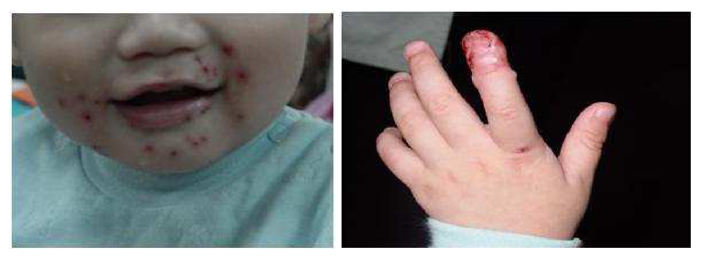
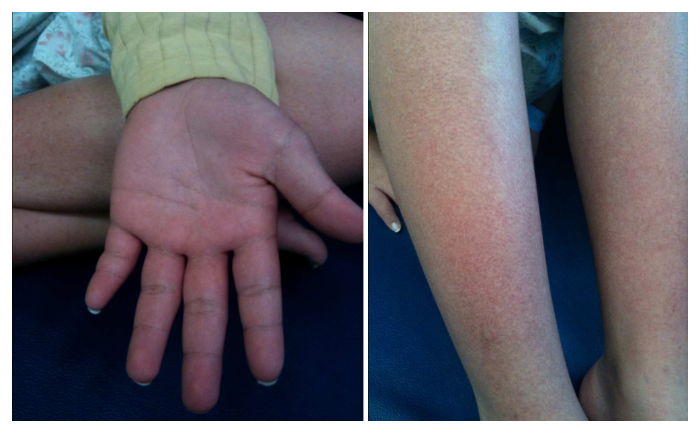
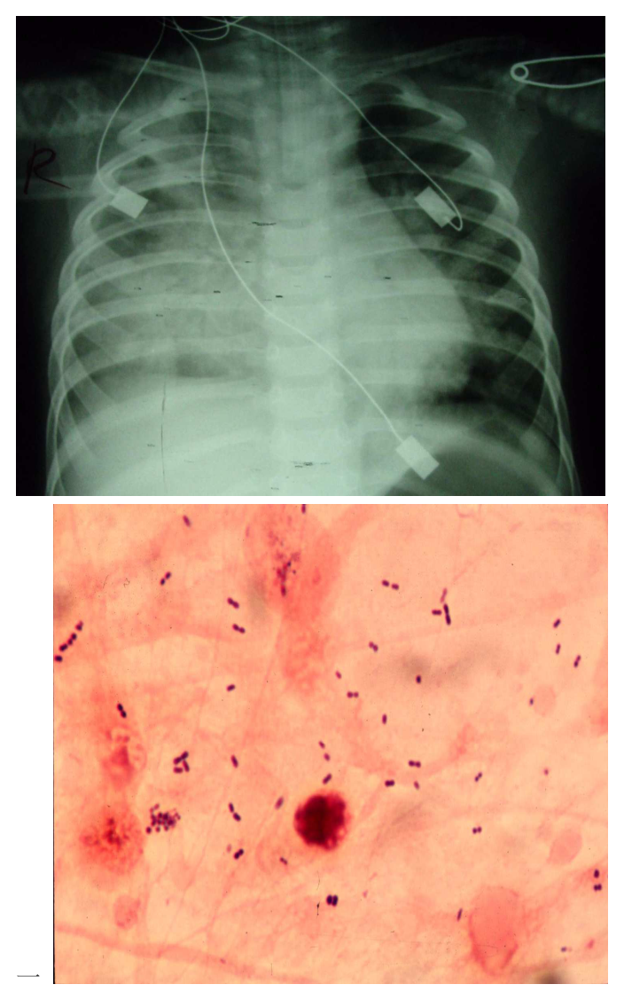
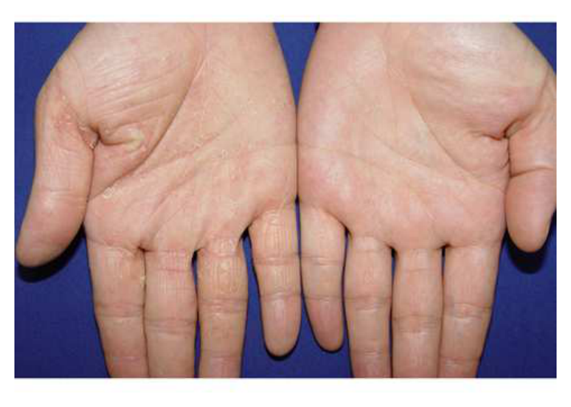
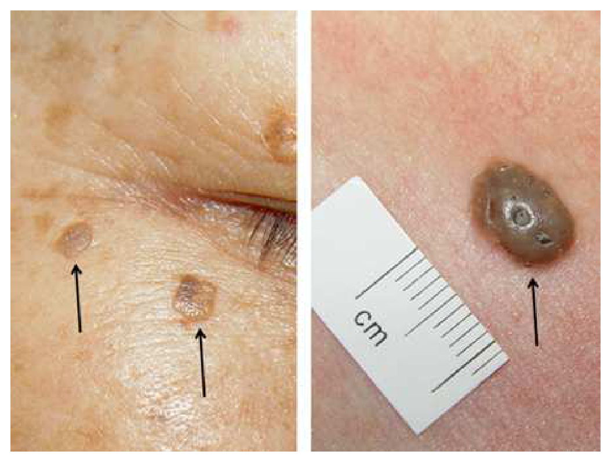
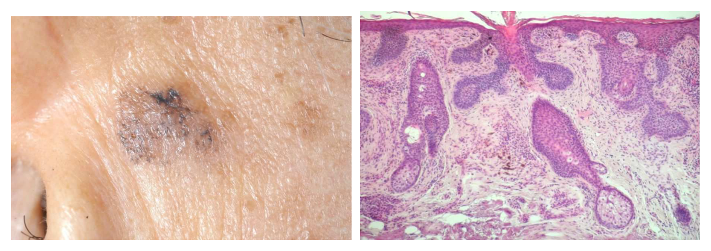
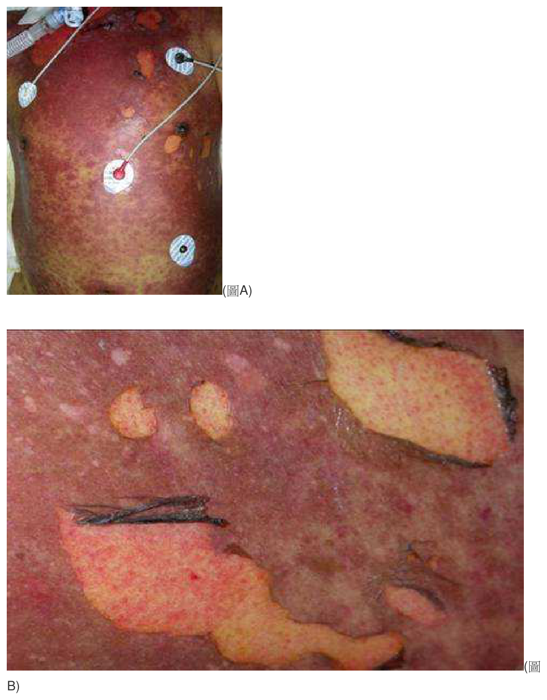
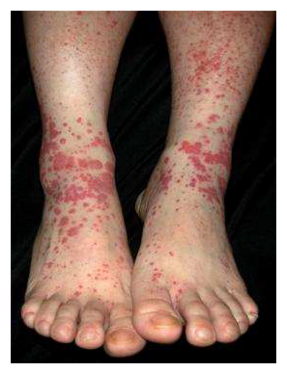
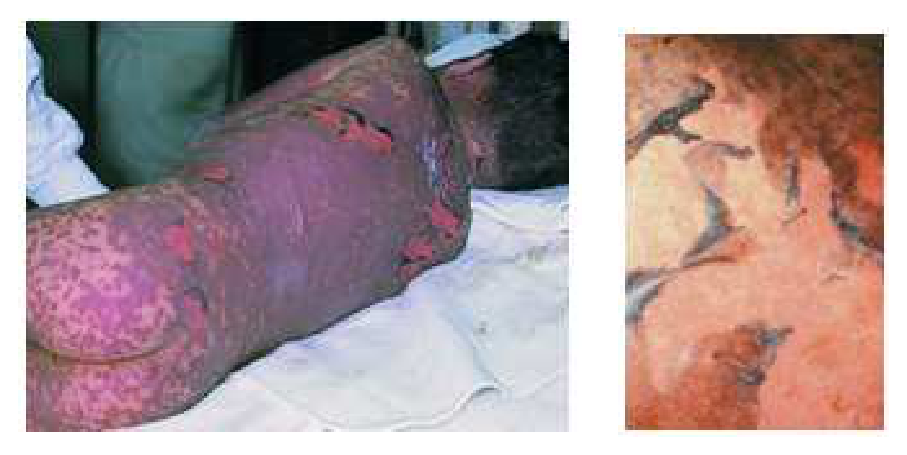

開卷有益 ／
醫師 ／ 醫學（四）（包括小兒科、皮膚科、神經科、精神科等科目及其相關臨床實例與醫學倫理） ／ 104 年104 年醫師醫學（四）（包括小兒科、皮膚科、神經科、精神科等科目及其相關臨床實例與醫學倫理）試題與答案
這一頁是民國 104 年醫師醫學（四）（包括小兒科、皮膚科、神經科、精神科等科目及其相關臨床實例與醫學倫理）的整份歷屆試題，共 80 題，題目與標準答案出自考選部「國家考試試題及測驗式試題答案」開放資料，其中 80 題附有詳解。以下逐題列出題幹、選項與答案；要計時作答或記錄成績，請用線上練習。
考選部原始場次代碼：104090
線上作答這一科 →
全部 80 題
第 1 題
一位10個月大的女嬰得了川崎症，而接受高劑量靜脈免疫球蛋白治療。有關她之後的預防接種，下列何者錯誤？
（A） 1歲大時接種水痘疫苗（B） 1歲3個月接種日本腦炎疫苗（C） 1歲6個月接種白喉、非細胞性百日咳、破傷風、小兒麻痺、b型嗜血桿菌五合一疫苗（D） 流感季可施打流感疫苗答案：（A）
詳解與考點 正解：高劑量靜脈免疫球蛋白（intravenous immunoglobulin, IVIG）中的抗體會干擾活性減毒疫苗的免疫反應；10 個月接受 IVIG 後，1 歲即接種水痘疫苗的間隔太短，因此（A）錯誤，故選 A。水痘疫苗是活性減毒疫苗，正是本題的關鍵。
B：日本腦炎疫苗不是受 IVIG 被動抗體干擾的活性減毒疫苗類型，依常規時程接種並無本題所指的問題。
C：五合一疫苗為非活性成分疫苗，IVIG 不會以同樣機轉顯著抑制其免疫反應，敘述正確。
D：流感疫苗可在流感季接種；它看似也屬「疫苗」而可能被誤排延後，但本題要區分的是活性減毒疫苗與非活性疫苗，敘述正確。
本題考點：川崎症（Kawasaki disease）治療後的疫苗安排須考慮 IVIG；被動抗體可降低活性減毒疫苗（live attenuated vaccine），如水痘疫苗（varicella vaccine）的免疫效力；非活性疫苗（inactivated vaccine）通常不受同樣限制。
第 2 題
一位1歲3個月男童因發高燒3天和臉部之皮疹求診，身體診察時發現左手食指有紅腫合併水泡如圖所示，下列那一項是最可能的診斷？

（A） 手足口症（B） 水痘（C） 單純疱疹病毒感染（D） 膿痂疹答案：（C）
詳解與考點 正解：圖中可見口周與下巴多發紅色糜爛性丘疹／小水泡，左手食指末端則紅腫並有成群水泡，合併高燒，符合單純疱疹病毒（herpes simplex virus, HSV）初次感染造成的疱疹性齒齦口腔炎，並因手指接觸口腔分泌物形成疱疹性指頭炎（herpetic whitlow）。因此最可能診斷為（C）單純疱疹病毒感染。
A：手足口症常由腸病毒引起，典型分布為口腔潰瘍及手掌、足底、臀部的疹子；本圖手指病灶是局部紅腫的成群水泡，且伴有明顯口周疱疹樣病灶，較符合 HSV 的自體接種，並非典型手足口症分布。
B：水痘會出現散布於軀幹、臉部與四肢、不同階段並存的全身性搔癢性水泡疹；本例沒有典型軀幹廣泛分布，反而是口周病灶合併單一手指的群聚水泡，不支持水痘。
D：膿痂疹常見淺表細菌感染後的蜂蜜色痂皮或膿疱，尤其可發生於口鼻周圍；但圖中可見的是口周疱疹性糜爛與食指成群水泡，配合高燒及疱疹性指頭炎的型態，更符合 HSV，而非膿痂疹。
本題考點：單純疱疹病毒感染（herpes simplex virus infection）——幼兒初次感染可表現為疱疹性齒齦口腔炎（herpetic gingivostomatitis）與發燒；疱疹性指頭炎（herpetic whitlow）是手指接觸含 HSV 的口腔分泌物後形成的疼痛性群聚水泡；須與手足口症（hand-foot-and-mouth disease）及膿痂疹（impetigo）依皮疹分布與形態鑑別。
第 3 題
一位家住高雄的10歲男童出現發燒、肌肉痠痛和關節痛，約於第4病日出現皮疹如圖所示，先從手腳開始進而擴散至軀幹，病人手掌、腳掌出現輕度腫脹，手掌緊繃感，掌心搔癢，有些刺痛感；血液檢查發現：血紅素為9.5gm/dL、血比容為28.5%、白血球為4,000/mm3，其中以淋巴球為主約佔65%，並出現非典型淋巴球16%、血小板為43,000/mm3，GOT:200 U/L、GPT:59 U/L ，下列敘述何者正確？

（A） 病童為感染EB病毒引起之傳染性單核球增多症，若皮疹變嚴重應考慮使用類固醇治療（B） 病童為感染A群鏈球菌引起之猩紅熱，須趕快使用抗生素治療10天，以免引起風濕熱（C） 病童為登革熱，屬於第二類法定傳染病，需於24小時內通報並抽血送至疾病管制局檢查（D） 病童為感染微小病毒B19引起之傳染性紅斑，應嚴密追蹤血球變化以及早偵測是否出現噬血症候群答案：（C）
詳解與考點 正解：病童急性發燒合併肌肉痠痛、關節痛，於第4病日出現由四肢向軀幹擴散的皮疹；圖中可見手掌泛紅、下肢有瀰漫性細小紅疹，且有掌蹠腫脹、搔癢與刺痛。再加上白血球減少、血小板明顯減少及轉胺酶上升，符合登革熱（dengue fever）的臨床與檢驗表現。登革熱屬第二類法定傳染病，須於24小時內通報並送驗，故選 C。
A：EB病毒傳染性單核球增多症（infectious mononucleosis）較典型的是發燒、咽喉炎、頸部淋巴結腫大，常有白血球增多與非典型淋巴球；本題則有顯著白血球及血小板減少，並合併登革熱典型的四肢起始皮疹與肌肉關節痛，不符。類固醇也不是單因皮疹加重即常規使用。
B：A群鏈球菌猩紅熱（scarlet fever）常見咽喉痛、高燒、砂紙樣皮疹、草莓舌及口周蒼白；其皮疹多由軀幹開始，且不會典型造成明顯血小板減少與白血球減少。本題整體表現不支持猩紅熱。
D：微小病毒B19造成的傳染性紅斑（erythema infectiosum）典型為拍打樣臉頰紅疹，之後出現網狀皮疹；雖可有關節症狀，但與圖示的掌蹠紅腫及本題明顯血小板減少、肝功能異常不符。噬血症候群（hemophagocytic syndrome）亦非此病童最符合的首要診斷。
本題考點：登革熱（dengue fever）的警示檢驗包括白血球減少、血小板減少與肝轉胺酶上升；登革熱皮疹（dengue rash）可在病程數日後出現並伴隨掌蹠不適；法定傳染病通報（notifiable disease reporting）須掌握登革熱的第二類通報時效。
第 4 題
下列那一項不是Apgar score的評估項目？
（A） 心跳次數（B） 肌肉張力（C） 呼吸（D） 哭聲大小答案：（D）
詳解與考點 正解：Apgar score 的五項為外觀、脈搏、反射反應、肌肉張力與呼吸；「哭聲大小」不是獨立評估項目，故選 D。哭聲可反映呼吸與反射反應，但不能取代其中任一正式項目。
A：心跳次數對應脈搏（pulse），是 Apgar score 的評估項目。
B：肌肉張力（activity）是 Apgar score 的評估項目。
C：呼吸（respiration）是 Apgar score 的評估項目。
本題考點：Apgar score 評估新生兒的 appearance、pulse、grimace、activity、respiration；哭聲大小不是獨立項目，僅可作為部分臨床觀察的線索。
第 5 題
早產兒呼吸窘迫症候群其第一天時胸部X光的變化不包括下列那一項？
（A） 氣管空氣影像（air bronchogram）（B） 網狀顆粒影像（reticulogranular pattern）（C） 纖維化變化（D） air leakage答案：（C）
詳解與考點 正解：早產兒呼吸窘迫症候群在出生第一天的胸部 X 光主要反映表面活性劑缺乏造成的肺泡塌陷；纖維化是較晚期慢性肺病變化，不是第一天的典型所見，因此選 C。
A：氣管空氣影像（air bronchogram）是肺泡塌陷、周圍肺實質不透光時的典型胸部 X 光徵象，敘述正確。
B：網狀顆粒影像（reticulogranular pattern）是新生兒呼吸窘迫症候群的典型早期影像表現，敘述正確。
D：air leakage 是呼吸窘迫症候群或正壓通氣相關的可能早期併發症，雖非核心診斷影像，但不能以此取代（C）纖維化這個明顯的晚期變化。
本題考點：新生兒呼吸窘迫症候群（neonatal respiratory distress syndrome）源於表面活性劑缺乏（surfactant deficiency）；早期 X 光可見 reticulogranular pattern 與 air bronchogram，纖維化（fibrosis）屬較晚期變化。
第 6 題
一位36週早產兒經剖腹產生下後，發生呼吸窘迫症狀，呼吸聲有囉音（rales），經給予氧氣（FiO2 25%）及連續性氣道正壓（CPAP）呼吸後，症狀逐漸改善，隔天即無症狀。下列那一項是最可能的診斷？
（A） 呼吸窘迫症候群（respiratory distress syndrome）（B） 短暫呼吸急促（transient tachypnea of newborn）（C） 細菌性肺炎（bacterial pneumonia）（D） 自發性氣胸（spontaneous pneumothorax）答案：（B）
詳解與考點 正解：36 週、剖腹產、出生後短暫呼吸窘迫與囉音，經低濃度氧氣及 CPAP 支持後隔天即改善，符合肺液清除延遲造成的新生兒短暫呼吸急促（transient tachypnea of newborn, TTN），故選 B。剖腹產缺少產程中的胸廓擠壓，是此病的重要線索。
A：呼吸窘迫症候群（respiratory distress syndrome）較常見於更早產兒，因表面活性劑不足而病程常較持久，和隔天即緩解不符。
C：細菌性肺炎通常不會在單純氧氣與 CPAP 後於隔天完全無症狀，且常須考慮感染評估與抗生素治療，和題幹病程不符。
D：自發性氣胸常出現突發呼吸惡化及單側呼吸音降低；題幹的囉音與快速穩定改善更支持（B）肺液吸收延遲。
本題考點：新生兒短暫呼吸急促（transient tachypnea of newborn, TTN）由肺液清除延遲（delayed lung fluid clearance）造成；剖腹產是危險因子，常以支持性治療後在短時間內改善。
第 7 題
下列何者不是造成延遲性黃疸之原因？
（A） 膽道阻塞（B） 配方奶哺育（C） 泌尿道感染（D） 甲狀腺低下症答案：（B）
詳解與考點 正解：「不是」延遲性黃疸的原因。延遲性黃疸須優先區分膽汁鬱積、感染、內分泌異常及母乳性黃疸；配方奶哺育本身不會造成這種黃疸，反而常用來與母乳相關黃疸的情境對照，故選 B。
A：膽道阻塞會造成結合型膽紅素排泄受阻，屬持續或延遲性黃疸的重要病因，故不是答案。
C：泌尿道感染可使嬰兒出現持續黃疸，應列入延遲性黃疸的感染性鑑別診斷，故非答案。
D：甲狀腺低下症會使膽紅素代謝與腸蠕動受影響，可表現為持續黃疸，故不是答案。
本題考點：延遲性新生兒黃疸（prolonged neonatal jaundice）需評估膽汁鬱積、感染與甲狀腺低下症；母乳性黃疸（breast milk jaundice）須與配方奶哺育區分。
第 8 題
下列敘述何者正確？
（A） 新生兒胃抽取液超過20 c.c.以上時，應懷疑肺部疾病（B） 新生兒在第一天看到胎便，可排除腸阻塞之可能（C） 約50%十二指腸阻塞的病童，合併染色體異常（D） 胎兒期羊水過多，常是胎兒腎臟疾病造成答案：（C）
詳解與考點 正解：新生兒腸阻塞與產前羊水過多的關聯。十二指腸阻塞會使吞入的羊水無法順利通過腸道，且與染色體異常，尤其唐氏症，有明顯關聯；約半數病童合併染色體異常的敘述正確，故選 C。
A：胃抽取液量增加較應考慮腸胃道阻塞或餵食耐受不良，不是肺部疾病的特異指標，故錯。
B：出生第一天排出胎便不能排除腸阻塞；部分遠端阻塞或不完全阻塞仍可先排出既有胎便，這是看似合理但判斷過度的誘答。
D：胎兒期羊水過多常與吞嚥受阻或上消化道阻塞有關；胎兒腎臟疾病反而較常造成羊水過少，故錯。
本題考點：十二指腸阻塞（duodenal obstruction）與唐氏症（Down syndrome）的關聯；羊水量（amniotic fluid volume）反映胎兒吞嚥、腸胃道通暢與腎臟排尿。
第 9 題
1歲8個月大的幼兒，因大量磚紅色血便求診，病人沒有發燒，沒有腹痛，最可能是下列何種診斷？
（A） 腸套疊（B） 沙門氏菌腸炎（C） 美克爾氏憩室出血（Meckel's diverticulum）（D） 肛裂答案：（C）
詳解與考點 正解：幼兒出現「大量磚紅色血便」，卻沒有發燒與腹痛。美克爾氏憩室的異位胃黏膜可分泌胃酸，引起鄰近迴腸潰瘍並無痛性下消化道出血；這種大量、無痛、無發燒的血便最典型，故選 C。
A：腸套疊可有血便，但通常伴陣發性腹痛、哭鬧、嘔吐或腹部腫塊；血便多是較晚期的「果醬樣」表現，與本題無痛情境不符。
B：沙門氏菌腸炎多有發燒、腹痛、腹瀉及發炎性血便，本題缺乏感染症狀，故錯。
D：肛裂常是排便表面的少量鮮紅血，常合併便祕或排便疼痛，不能解釋大量磚紅色血便。
本題考點：美克爾氏憩室（Meckel's diverticulum）可因異位胃黏膜造成無痛性下消化道出血；兒童血便須與腸套疊（intussusception）及感染性腸炎鑑別。
第 10 題
下列有關兒童單純發燒性抽筋（simple febrile seizures）之敘述，何者最不正確？
（A） 有明顯家族史（B） 很少在6個月前發生（C） 須作腦電圖（electroencephalogram）檢查（D） 不會影響日後智能表現答案：（C）
詳解與考點 正解：「單純」發燒性抽筋。單純發燒性抽筋是典型年齡範圍內、全身性、短暫且不反覆的熱性痙攣；神經學檢查正常時，腦電圖不能預測復發或日後癲癇，因此不需常規施作，故最不正確的是 C。
A：發燒性抽筋具有家族聚集現象，有明顯家族史並不罕見，敘述可成立。
B：其好發年齡在 6 個月至 5 歲，6 個月前發生很少見；若發生應考慮其他病因，故敘述正確。
D：單純發燒性抽筋通常不影響長期認知與智能表現，這是與複雜型發作或潛在神經疾病不同之處，故非答案。
本題考點：單純發燒性抽筋（simple febrile seizure）是良性、短暫的熱性痙攣；腦電圖（electroencephalogram）不作為典型個案的常規檢查。
第 11 題
關於兒童急性腎衰竭，下列何者不是腎前性腎功能不全的典型實驗數據表現？
（A） 尿鈉< 20 mEq/L（B） 鈉離子排除分率（FENa）< 1%（C） 尿液滲透壓 > 500 mOsm/kg（D） 尿液分析可見紅血球及白血球答案：（D）
詳解與考點 正解：腎前性腎功能不全時腎小管仍能保鈉與濃縮尿液。因有效循環血量不足，腎臟會降低尿鈉、FENa 並提高尿液滲透壓；尿沉渣通常較單純。尿液分析出現紅血球及白血球較提示腎實質或泌尿道病變，不是典型腎前性數據，故選 D。
A：尿鈉 <20 mEq/L 反映腎臟積極保鈉，是腎前性腎功能不全的典型方向。
B：FENa <1% 表示鈉離子排除很少，符合腎小管功能仍完整時的腎前性型態。
C：尿液滲透壓 >500 mOsm/kg 表示可濃縮尿液，與腎前性低灌流時的水分保存反應相符。
本題考點：腎前性急性腎損傷（prerenal acute kidney injury）的尿液指標包括低尿鈉、低鈉離子排除分率（fractional excretion of sodium, FENa）與高尿液滲透壓；尿沉渣有助區分腎實質病變。
第 12 題
兒童的腎絲球濾過速率（glomerular filtration rate, GFR）何時可以達到和成人一般的數值？
（A） 出生後第二年至第三年（B） 出生後第四年至第五年（C） 出生後第七年至第八年（D） 青春期答案：（A）
詳解與考點 正解：兒童腎功能的成熟時間。新生兒腎絲球濾過速率較低，出生後隨腎血流與腎臟成熟快速上升，約在出生後第 2 至第 3 年可達成人相近的數值，故選 A。
B：第 4 至第 5 年已晚於一般達到成人相近 GFR 的時間，故非最佳答案。
C：第 7 至第 8 年更晚，不能反映幼兒早期已完成的主要腎絲球濾過功能成熟。
D：青春期雖會隨體型改變而影響絕對 GFR，但不是兒童 GFR 達成人一般數值的典型時間點。
本題考點：腎絲球濾過速率（glomerular filtration rate, GFR）在出生後持續成熟；兒童腎臟生理（renal maturation）須注意新生兒與幼兒的年齡差異。
第 13 題
下列何種病原最少引起溶血性尿毒症候群（hemolytic-uremic syndrome）？
（A） 大腸桿菌O157:H7（E. coli O157:H7）（B） 志賀氏菌（Shigella）（C） 肺炎鏈球菌（Streptococcus pneumoniae）（D） 霍亂弧菌（Vibrio cholerae）答案：（D）
詳解與考點 正解：「最少」引起溶血性尿毒症候群的病原。溶血性尿毒症候群最典型機轉是志賀毒素或相近毒素造成血管內皮傷害；霍亂弧菌以分泌性水樣腹瀉為主，並非此症候群的典型致病菌，故選 D。
A：大腸桿菌 O157:H7 可產生志賀毒素，是兒童腹瀉後溶血性尿毒症候群的經典病原，故非答案。
B：志賀氏菌也可產生志賀毒素並造成溶血性尿毒症候群，故不是最少見者。
C：肺炎鏈球菌相關溶血性尿毒症候群較少見，但確有特殊機轉可造成此症候群；它看似較不像腸道病原，仍比霍亂弧菌更具關聯。
本題考點：溶血性尿毒症候群（hemolytic-uremic syndrome, HUS）常與志賀毒素（Shiga toxin）相關；典型三徵為微血管病性溶血性貧血、血小板低下與急性腎損傷。
第 14 題
有關cerebral palsy之敘述，下列何者錯誤？
（A） cerebral palsy的病人不一定會合併智能障礙（B） 最嚴重的型態是hemiplegia（C） 要診斷為cerebral palsy時須事先排除其他進行性腦病變的可能（D） cerebral palsy的治療需要復健師與心理師的幫忙答案：（B）
詳解與考點 正解：腦性麻痺各型態的嚴重度。腦性麻痺是非進行性的發育中腦部損傷所致運動障礙；四肢受累的型態通常功能影響最重，hemiplegia 僅單側受累，不能稱為最嚴重型態，故錯誤敘述為 B。
A：腦性麻痺的運動障礙可單獨存在，並非每名病人都有智能障礙，敘述正確。
C：診斷時須排除進行性神經退化或其他會惡化的腦病變，才能符合腦性麻痺的非進行性定義，故正確。
D：治療需跨專業合作，包括復健、心理與家庭支持，以改善功能與參與，敘述正確。
本題考點：腦性麻痺（cerebral palsy）是非進行性腦部損傷造成的姿勢與動作障礙；痙攣型四肢麻痺（spastic quadriplegia）通常比偏癱（hemiplegia）嚴重。
第 15 題
下列何種疾病不屬於neurocutaneous syndromes？
（A） Sturge-Weber syndrome（B） multiple sclerosis（C） von Hippel-Lindau disease（D） incontinentia pigmenti答案：（B）
詳解與考點 正解：神經皮膚症候群必須有特徵性皮膚表現與神經系統病灶的結合。multiple sclerosis 是中樞神經脫髓鞘疾病，並非以皮膚病灶為核心的遺傳性神經皮膚症候群，故選 B。
A：Sturge-Weber syndrome 有葡萄酒色斑與腦膜血管瘤，屬經典神經皮膚症候群。
C：von Hippel-Lindau disease 可出現中樞神經血管母細胞瘤與視網膜病灶，常歸入神經皮膚症候群的相關疾病。
D：incontinentia pigmenti 有典型皮膚病程，亦可合併神經與眼部異常，屬神經皮膚症候群。
本題考點：神經皮膚症候群（neurocutaneous syndromes）以皮膚線索連結神經系統病灶；多發性硬化症（multiple sclerosis）是脫髓鞘疾病，分類不同。
第 16 題
一位嬰兒注視著檢查者，眼睛隨著他的移動而轉動，並且對著他笑，但是沒有笑出聲音，手微張開，扶著肩膀時頭才會挺直。這位正常嬰兒的發展年齡最可能是幾個月大？
（A） 1（B） 2（C） 4（D） 6答案：（B）
詳解與考點 正解：會注視追視、社會性微笑但尚未出聲笑，以及扶肩才可短暫挺頭。這組視覺社會反應與粗大動作里程碑最符合約 2 個月的正常發展：可追視與微笑，而頭部控制仍未成熟，故選 B。
A：1 個月通常可短暫注視，但穩定追視與社會性微笑尚不如本題明顯，故較早。
C：4 個月多可有較佳頭部控制、能主動抬頭，且笑聲較常見；本題仍需扶肩才挺頭，故較小。
D：6 個月的頭部控制已穩定，常可坐時支撐良好，與本題的粗大動作表現不符。
本題考點：嬰兒發展里程碑（developmental milestones）須整合視覺追視、社會性微笑與頭部控制；約 2 個月可見社會性互動增加，但頸部控制未完全成熟。
第 17 題
關於21-羥酶缺乏（21-hydroxylase deficiency）所致之先天性腎上腺增生（congenitaladrenal hyperplasia）的敘述，下列何者正確？
（A） 男嬰的外陰部會出現性器混淆（ambiguous genitalia）（B） 大多數患兒會出現電解質失調（electrolyte disturbance）（C） 男童比女童易罹患此症（D） 臨床上常以21-羥酶酵素活性（enzyme activity）的測定作為診斷的依據答案：（B）
詳解與考點 正解：21-羥酶缺乏使皮質醇與醛固酮生成不足，前驅物轉向雄性素。典型嚴重型可造成鹽分流失，故多數患兒可能出現低鈉、高鉀等電解質失調；此敘述正確，故選 B。
A：46,XX 女嬰因雄性素過多可有外陰性器模糊；46,XY 男嬰外生殖器通常外觀正常，故不能概稱男嬰會有此表現。
C：此病多為常染色體隱性遺傳，男女罹患機率相近，故錯。
D：臨床診斷通常以累積升高的 17-hydroxyprogesterone 等生化檢測為主，不是直接測量體內 21-羥酶活性。
本題考點：21-羥酶缺乏（21-hydroxylase deficiency）是先天性腎上腺增生（congenital adrenal hyperplasia）最常見原因；鹽分流失型可有電解質失調與腎上腺危象。
第 18 題
關於先天性甲狀腺低能症（congenital hypothyroidism）的臨床表徵，下列那一項最為罕見？
（A） 身材矮小（B） 餵食困難（C） 甲狀腺腫（D） 皮膚乾燥答案：（C）
詳解與考點 正解：先天性甲狀腺低下症的「最罕見」表徵。多數先天性甲狀腺低下症源於甲狀腺發育不全或異位，甲狀腺腫並不常見；反之，餵食困難、皮膚乾燥與生長遲緩均可見，故選 C。
A：未治療時甲狀腺素不足會影響生長與骨成熟，可表現為身材矮小，故非答案。
B：甲狀腺低下的新生兒可能嗜睡、吸吮差與餵食困難，敘述正確。
D：甲狀腺素不足使皮膚代謝與汗腺功能下降，皮膚乾燥是可見表現，故非答案。
本題考點：先天性甲狀腺低下症（congenital hypothyroidism）常表現為餵食困難、活動低下與生長遲緩；甲狀腺發育不全（thyroid dysgenesis）使甲狀腺腫較少見。
第 19 題
關於幼兒持續性高胰島素低血糖症（persistent hyperinsulinemic hypoglycemia of infancy）的敘述，下列何者錯誤？
（A） 其遺傳模式為X-性聯遺傳（X-linked inheritance）（B） KIR 6.2 channel的基因突變會造成此病（C） sulfonylurea receptor的基因突變會造成此病（D） 需及時治療以避免神經方面的後遺症答案：（A）
詳解與考點 正解：持續性高胰島素低血糖症的遺傳與鉀離子通道。常見病因涉及胰島 β 細胞 ATP-sensitive potassium channel 的 KIR6.2 或 sulfonylurea receptor 基因，並非典型 X-性聯遺傳，故錯誤敘述為 A。
B：KIR6.2 channel 的基因突變會影響 β 細胞膜電位與胰島素分泌，可造成此病，故正確。
C：sulfonylurea receptor 是 ATP-sensitive potassium channel 的重要組成，相關基因突變可造成持續性高胰島素低血糖症，故正確。
D：持續低血糖會危害腦部能量供應，需及時辨識與治療以降低神經後遺症，故正確。
本題考點：幼兒持續性高胰島素低血糖症（persistent hyperinsulinemic hypoglycemia of infancy）與 ATP-sensitive potassium channel 有關；低血糖（hypoglycemia）須及早處置以避免神經損傷。
第 20 題
有關幼年性特發性關節炎（juvenile idiopathic arthritis）中的系統性關節炎（systemic-onsetarthritis）敘述，下列何者正確？
（A） 不會有肝、脾腫大（B） 不會有淋巴腺腫大及心包膜炎（C） 經常併發慢性葡萄膜炎（chronic uveitis）（D） 發燒時常伴隨皮膚疹答案：（D）
詳解與考點 正解：系統性幼年性特發性關節炎的全身性發炎表現。其典型特徵是反覆高燒時伴短暫鮭紅色斑疹，故（D）發燒時常伴隨皮膚疹正確。
A：系統性關節炎可有肝脾腫大，是全身發炎的一部分；選項說「不會」過度絕對，故錯。
B：可出現淋巴腺腫大與心包膜炎等漿膜炎表現，故「不會有」不正確。
C：慢性葡萄膜炎較常與其他類型的幼年性特發性關節炎相關；系統性型的典型重點是發燒與皮疹，故錯。
本題考點：系統性幼年性特發性關節炎（systemic-onset juvenile idiopathic arthritis）可有間歇高燒、鮭紅色皮疹、肝脾腫大、淋巴腺腫大與漿膜炎；須注意巨噬細胞活化症候群（macrophage activation syndrome）。
第 21 題
7 個月大的男孩，發生高燒、咳嗽、呼吸困難的症狀，送到醫院後給予呼吸器及100%氧氣治療，才能勉強維持血中氧氣濃度大於 85%，血液檢查顯示白血球數目為25,500/mm3；其中淋巴球64.5%，顆粒球4.5%；單核球30.5%，嗜鹼性球0.5%，免疫學檢查CD3=89%，CD4=54%，CD8=35%，CD19=0%，CD56=11%。最有可能的診斷是下列那一種疾病？
（A） Bruton agammaglobulinemia（B） severe combined immunodeficiency（C） common variable immunodeficiency（D） hyper-IgM syndrome答案：（A）
詳解與考點 正解：嚴重呼吸道感染合併 CD19=0%，表示周邊 B 細胞幾乎缺如；CD3、CD4、CD8 均存在，顯示 T 細胞數量相對保留。這種 B 細胞成熟障礙最符合 Bruton agammaglobulinemia，故選 A。
B：severe combined immunodeficiency 應呈現合併性的 T 細胞與 B 細胞功能缺陷，T 細胞不會如本題般明顯保留，故錯。
C：common variable immunodeficiency 通常是免疫球蛋白低下而非典型的 B 細胞完全缺如，且常在較大年齡才被辨識，故不符。
D：hyper-IgM syndrome 的 B 細胞數量通常存在，問題在同種型轉換缺陷；本題 CD19=0% 指向 B 細胞發育缺陷，故錯。
本題考點：Bruton 無丙種球蛋白血症（Bruton agammaglobulinemia）是 B 細胞成熟障礙，周邊 CD19 B 細胞低或缺如；嚴重複合型免疫缺乏症（severe combined immunodeficiency）則涉及 T 細胞缺陷。
第 22 題
氣喘病童因急性氣喘發作至急診室時，下列處置何者最不適當？
（A） 給予氧氣（O2）吸入（B） 給予吸入型短效支氣管擴張劑（short-acting β2 agonist）（C） 給予吸入型類固醇（inhaled corticosteroid）（D） 給予吸入型抗膽鹼藥物（inhaled anticholinergics）答案：（C）
詳解與考點 正解：急診的「急性」氣喘發作，處置要先迅速逆轉支氣管痙攣與低氧。吸入型短效 β2 致效劑是急性緩解主力；吸入型類固醇主要作長期控制，起效不足以取代急診急性處置，因此最不適當的是 C。
A：低氧血症時給予氧氣可改善氧合，是急性發作的適當支持治療。
B：吸入型短效支氣管擴張劑可快速解除支氣管收縮，是急診首要治療之一。
D：吸入型抗膽鹼藥物可在中重度急性發作時併用以增加支氣管擴張效果，故非最不適當。
本題考點：急性氣喘惡化（acute asthma exacerbation）以氧氣與吸入型短效 β2 致效劑（short-acting β2 agonist）為急性處置；吸入型類固醇（inhaled corticosteroid）主要是控制治療。
第 23 題
有一位年齡7歲的小女孩因長期臉色蒼白而半個月來四肢常無緣無故出現紫斑或牙齦出血而被送來醫院，檢查結果發現無肝脾腫大。血液學呈現血色素（Hb）9.2g/dL，白血球計數2500/mm3，中性球佔5%，血小板數為25×103/mm3，網狀紅血球矯正後為0.4%。骨髓檢查有核細胞非常稀少，且各血球系都有明顯缺乏現象。下列何者是最有可能的診斷？
（A） 急性淋巴性白血病（B） 特異性血小板減少性紫斑症（C） 免疫性溶血性貧血（D） 嚴重再生不良性貧血答案：（D）
詳解與考點 正解：三系血球低下、矯正網狀紅血球 0.4% 與骨髓有核細胞極少。這表示骨髓造血衰竭而非周邊破壞；嚴重再生不良性貧血最能同時解釋貧血、中性球低下、血小板低下與低細胞性骨髓，故選 D。
A：急性淋巴性白血病可造成血球低下，但骨髓常見淋巴芽細胞增生或浸潤，非本題的全面低細胞性表現。
B：特異性血小板減少性紫斑症主要是孤立性血小板低下，不能解釋白血球、血色素與網狀紅血球都低。
C：免疫性溶血性貧血應有周邊紅血球破壞與代償性網狀紅血球上升，與本題 0.4% 的低生成反應相反。
本題考點：嚴重再生不良性貧血（severe aplastic anemia）以全血球低下（pancytopenia）及低細胞性骨髓（hypocellular marrow）為特徵；網狀紅血球（reticulocyte）可反映骨髓紅血球生成。
第 24 題
兒童患者如果發生disseminated intravascular coagulation（DIC），血液檢查時，下列何者不會出現？
（A） 血中D-dimer出現（B） 血中Factor V 或 Factor VIII 降低（C） 血小板（platelets）數目降低（D） 血中fibrinogen升高答案：（D）
詳解與考點 正解：DIC 的消耗性凝血病變。全身凝血活化會消耗血小板與凝血因子，同時形成與分解纖維蛋白；因此 D-dimer 上升、Factor V 或 VIII 降低、血小板降低都可出現，fibrinogen 則被消耗而傾向降低，故選 D。
A：D-dimer 是交聯纖維蛋白降解產物，DIC 中纖溶活化會使其上升，故會出現。
B：Factor V 與 Factor VIII 等凝血因子在持續凝血中被消耗，降低符合 DIC。
C：血小板參與微血栓形成而被消耗，血小板低下是 DIC 的典型檢驗異常。
本題考點：瀰漫性血管內凝血（disseminated intravascular coagulation, DIC）同時有凝血與纖溶活化；消耗性凝血病變（consumptive coagulopathy）造成血小板、凝血因子與 fibrinogen 下降。
第 25 題
有一位12歲的男童因兩邊淋巴腺腫大到醫院求診，經血液及切片檢查，發現有細胞型態正常的組織球增生與血液細胞吞噬現象。細胞免疫檢驗發現CD1a陰性，而有CD8陽性之T細胞。下列何者為最正確診斷？
（A） Langerhans cell histiocytosis（B） infection-associated hemophagocytic syndrome（C） malignant histiocytosis（D） acute monocytic leukemia答案：（B）
詳解與考點 正解：淋巴腺腫大、形態正常的組織球增生與血球吞噬，並有 CD1a 陰性。這組病理與免疫表現符合感染相關血球吞噬症候群；CD8 陽性 T 細胞活化也支持細胞免疫驅動的病程，故選 B。
A：Langerhans cell histiocytosis 的 Langerhans 細胞通常表現 CD1a 陽性，與本題 CD1a 陰性不符；這是最具迷惑性的鑑別線索。
C：malignant histiocytosis 應見惡性、異型組織球增生，本題特別指出細胞型態正常，故錯。
D：acute monocytic leukemia 應有單核球系白血病細胞增生的證據，不能以正常組織球的血球吞噬現象作診斷。
本題考點：感染相關血球吞噬症候群（infection-associated hemophagocytic syndrome）可見組織球吞噬血球；Langerhans 細胞組織球增生症（Langerhans cell histiocytosis）常有 CD1a 表現。
第 26 題
10天大男嬰被發現心跳過快。心電圖顯示窄QRS波，心跳每分鐘220次，P波不明顯。下列何者處置最不適當？
（A） 可先嘗試刺激迷走神經治療（B） 可先給予靜脈注射adenosine（C） 首選給予靜脈注射verapamil（D） 生命徵象穩定，給予同步電擊（DC cardioversion）答案：（C）
詳解與考點 正解：10 天大嬰兒有規則窄 QRS 心搏過速且 P 波不明顯，符合上心室性心搏過速（supraventricular tachycardia, SVT）。嬰兒靜脈注射 verapamil 可能造成嚴重低血壓與心血管崩潰，不可作為首選，故最不適當的是（C）。
A：迷走神經刺激可作為依賴房室結傳導之 SVT 的初步處置。
B：生命徵象穩定的規則窄 QRS SVT 可給予靜脈注射 adenosine。
D：同步電擊不是穩定個案的首選，通常先採迷走神經刺激與 adenosine；但藥物無效、病況惡化或轉為不穩定時仍可採用，較（C）首選 verapamil 的風險明確性低。
本題考點：新生兒上心室性心搏過速（SVT）的迷走神經刺激與 adenosine；verapamil 在嬰兒的心血管風險；同步電擊（synchronized cardioversion）的適應情境。
第 27 題
下列何者於聽診時隨病人呼吸但會有固定且寬的第二心音分開（widely splitting of S2）？
（A） 三尖瓣膜閉鎖（B） 主動脈狹窄（C） 心室中膈缺損（D） 心房中膈缺損答案：（D）
詳解與考點 正解：「固定且寬的第二心音分開」；心房中膈缺損造成持續左向右分流，使右心室每次搏出的血量持續增加、肺動脈瓣關閉延遲。吸氣與呼氣時右心室的充盈變化被分流緩衝，因此 A2 與 P2 的分開既寬又固定，故選 D。
A：三尖瓣膜閉鎖會造成右心發育不全與發紺性心臟病，並非固定寬分裂 S2 的典型聽診所見。
B：主動脈狹窄會使左心室射血延長，較典型的是 A2 延遲所致的矛盾性分裂（paradoxical splitting），而不是隨呼吸固定而寬的分裂。
C：心室中膈缺損可有左向右分流與收縮期雜音，但其 S2 分裂不具心房中膈缺損那種固定寬分裂的特徵。
本題考點：第二心音分裂（S2 splitting）——心房中膈缺損（atrial septal defect）因固定右心室容量負荷而出現固定寬分裂；矛盾性分裂（paradoxical splitting）則見於左心射血延遲。
第 28 題
有關心室中膈缺損（VSD）的敘述，下列何者錯誤？
（A） 第二型（膜型）的心室中膈缺損可能自然癒合（B） 第一型（室上嵴型）的心室中膈缺損易造成主動脈瓣膜脫垂（C） 東方民族其第一型（室上嵴型）心室中膈缺損的發生率比第二型（膜型）高（D） 部分第二型（膜型）的心室中膈缺損日後會合併肺動脈瓣下狹窄答案：（C）
詳解與考點 正解：第二型膜周型心室中膈缺損（perimembranous VSD）為最常見型態。第一型室上嵴型（supracristal VSD）在東亞族群比例雖較高，仍不高於膜周型，因此（C）錯誤。
A：小型膜周型 VSD 可因缺損周緣組織生長而自然關閉。
B：室上嵴型缺損位於主動脈瓣下方，可牽拉瓣葉而造成主動脈瓣脫垂及逆流。
D：部分膜周型 VSD 可因右心室異常肌束增生形成雙腔右心室（double-chambered right ventricle），造成漏斗部或肺動脈瓣下的右心室流出道阻塞。
本題考點：心室中膈缺損（ventricular septal defect, VSD）的解剖分型；室上嵴型 VSD 與主動脈瓣脫垂；雙腔右心室（DCRV）。
第 29 題
先天性代謝異常疾病（inborn errors of metabolism）大多以體染色體隱性方式遺傳（autosomal recessive inheritance），但有少數例外，以性染色體隱性方式（X-linkedrecessive）遺傳，例如？
（A） 先天腎上腺增生症（congenital adrenal hyperplasia）（B） 第一型肝醣儲積症（glycogen storage disease I, von Gierke disease）（C） 第一型黏多醣症（mucopolysaccharidosis I, Hurler syndrome）（D） 葡萄糖-6-磷酸去氫酶（glucose-6-phosphate dehydrogenase）缺乏症答案：（D）
詳解與考點 正解：找出少數採 X 連鎖隱性遺傳的先天代謝異常。葡萄糖-6-磷酸去氫酶缺乏症是 X-linked recessive，男性因只有一條 X 染色體而較常表現溶血傾向，故選 D。
A：先天腎上腺增生症最常見的類型為常染色體隱性遺傳（autosomal recessive），不是 X 連鎖隱性。
B：第一型肝醣儲積症為常染色體隱性遺傳，與題目所問的例外不符。
C：第一型黏多醣症 Hurler syndrome 為常染色體隱性遺傳；容易混淆的是第二型黏多醣症 Hunter syndrome 才是 X 連鎖隱性。
本題考點：遺傳模式（inheritance pattern）——多數先天代謝異常為常染色體隱性遺傳（autosomal recessive）；葡萄糖-6-磷酸去氫酶缺乏症（G6PD deficiency）為重要的 X-linked recessive 例外。
第 30 題
下列遺傳或染色體疾病與其好發先天性心臟病之相關組合，何者最不可能？
（A） Down syndrome – endocardial cushion defect（B） Turner syndrome – bicuspid aortic valve（C） DiGeorge syndrome –interrupted aortic arch（D） Williams syndrome – aortic root dilatation/regurgitation答案：（D）
詳解與考點 正解：題目要找遺傳疾病與典型先天性心臟病最不相符的配對。Williams syndrome 常見的是 supravalvular aortic stenosis 與周邊肺動脈狹窄；主動脈根部擴張／逆流較不是其代表性關聯，故選 D。
A：Down syndrome 與房室中膈缺損（endocardial cushion defect/atrioventricular septal defect）有強烈關聯，配對正確。
B：Turner syndrome 常見二尖瓣式主動脈瓣（bicuspid aortic valve），也常與主動脈縮窄相關，配對正確。
C：DiGeorge syndrome 的圓錐動脈幹異常包括主動脈弓中斷（interrupted aortic arch），配對正確。
本題考點：遺傳症候群與先天性心臟病（genetic syndromes and congenital heart disease）——Down syndrome 對應房室中膈缺損；Turner syndrome 對應 bicuspid aortic valve；DiGeorge syndrome 對應 conotruncal defects；Williams syndrome 對應 supravalvular aortic stenosis。
第 31 題
人類的DNA（genome）分別包裹於各條染色體之中，人類大約有兩萬三千個基因。下列有關基因在染色體上分布之敘述，何者錯誤？
（A） 染色體的中心節或端粒（telomere）處常有許多重複的序列（B） 基因（gene）常由多個exon所組成，exon和exon之間的intron常常比exon要長的多（C） 人類的基因排列相當的緊密，基因和基因之間幾乎沒有甚麼無關的序列，這和低等生物不同（D） 人類的DNA上有一些小段的序列，雖然沒有負責蛋白質，但是會轉錄形成shRNA，可能有基因調控的功能答案：（C）
詳解與考點 正解：題目問基因組分布的錯誤敘述；人類基因組含有大量非編碼 DNA、重複序列與基因間區域，基因並非彼此緊密相鄰而幾乎沒有無關序列，故 C 錯誤。
A：著絲點與端粒都富含重複 DNA 序列，這些區域對染色體結構與分離具有重要性，敘述正確。
B：真核基因常由多個 exon 與 intervening intron 組成，intron 的總長度常大於 exon，敘述正確。
D：部分非蛋白質編碼序列可轉錄為小型非編碼 RNA，例如 short hairpin RNA（shRNA）相關分子，並參與基因表現調控；「不編碼蛋白質」不等於沒有功能，故敘述正確。
本題考點：人類基因組（human genome）——基因組包含 exon、intron、基因間區域與重複序列；非編碼 RNA（non-coding RNA）可參與基因調控，非編碼 DNA 不等同無功能 DNA。
第 32 題
一位3歲大的男童，因持續8天的發燒、咳嗽、流鼻水而住院。身體診察發現呼吸聲有囉音和右側呼吸音下降的情形，胸部X光在入院時為圖一。血液檢查：血紅素7.2 gm/dL、血小板32,000/mm3、白血球24,000/mm3、CRP 25 mg/dL、GOT128 IU/L、GPT 26 IU/L，肋膜抽取液的格蘭氏染色為圖二。經輸血後出現黃疸情形並且出現無尿的狀況。下列那個診斷最符合？圖一 圖二

（A） 急性鏈球菌感染後腎絲球腎炎（acute poststreptococcal glomerulonephritis）（B） 溶血性尿毒症候群（hemolytic uremic syndrome）（C） 風濕熱（rheumatic fever）（D） 毒性休克症候群（toxic shock syndrome）答案：（B）
詳解與考點 正解：本題為肺炎併肋膜積液，圖二可見紫染的雙球菌，結合圖一右側肺部浸潤與肋膜積液，支持侵襲性肺炎鏈球菌感染。後續出現貧血、血小板低下、黃疸與無尿，構成微血管病性溶血、血小板消耗及急性腎損傷的典型三徵，最符合溶血性尿毒症候群（hemolytic uremic syndrome, HUS）。肺炎鏈球菌可藉神經胺酸酶暴露紅血球 T antigen，引發溶血；輸血後黃疸加劇也與此機轉相符，故選 B。
A：急性鏈球菌感染後腎絲球腎炎通常在鏈球菌咽炎或膿痂疹後一段時間才出現血尿、水腫與高血壓，雖可有腎功能下降，卻無法合理解釋本題顯著溶血性貧血、血小板低下及輸血後黃疸。
C：風濕熱是 A 群鏈球菌咽炎後的免疫性併發症，主要表現為心炎、遊走性多關節炎、舞蹈症、環形紅斑或皮下結節；本題的肺炎鏈球菌性膿胸背景與溶血、無尿的三徵均不符合。
D：毒性休克症候群可造成發燒、低血壓、多器官功能障礙與瀰漫性紅疹，通常與金黃色葡萄球菌或 A 群鏈球菌毒素相關；圖示肺炎鏈球菌感染後的溶血、血小板低下與急性腎損傷，較符合 HUS 而非毒素性休克。
本題考點：溶血性尿毒症候群（hemolytic uremic syndrome, HUS）的三徵為微血管病性溶血性貧血、血小板低下與急性腎損傷；肺炎鏈球菌相關 HUS（pneumococcal-associated HUS）可因神經胺酸酶暴露 T antigen 而造成溶血，輸注含血漿製品可能加重反應。
第 33 題
承上題，最可能的病原體是：
（A） A群鏈球菌（group A Streptococcus）（B） 大腸桿菌（Escherichia coli）（C） 金黃色葡萄球菌（Staphylococcus aureus）（D） 肺炎鏈球菌（Streptococcus pneumoniae）答案：（D）
詳解與考點 正解：承前題，3 歲男童有肺炎與肋膜積液，並出現貧血、血小板低下、溶血後黃疸與無尿，符合肺炎鏈球菌感染相關的溶血性尿毒症候群（hemolytic uremic syndrome）。肺炎鏈球菌的 neuraminidase 可暴露紅血球與腎絲球細胞的 T antigen，導致溶血與急性腎損傷，故最可能病原體為 D 肺炎鏈球菌。
A：A 群鏈球菌可造成咽喉炎、猩紅熱與感染後腎絲球腎炎，但無法最完整解釋肺炎、胸水及急性溶血性尿毒症候群的組合。
B：大腸桿菌，尤其產 Shiga toxin 菌株，是常見的腹瀉相關 HUS 病原；它看似與 HUS 相符，但前題以呼吸道感染與肋膜積液為主，較支持肺炎鏈球菌。
C：金黃色葡萄球菌可引起嚴重肺炎或膿胸，卻不是此種肺炎合併 T-antigen 暴露型 HUS 的典型病原。
本題考點：肺炎鏈球菌相關溶血性尿毒症候群（pneumococcal-associated HUS）——肺炎鏈球菌肺炎可合併溶血、血小板低下與急性腎損傷；須與 Shiga toxin-producing Escherichia coli 的腹瀉相關 HUS 區分。
第 34 題
下列有關脂漏性皮膚炎 (seborrheic dermatitis) 之敘述，何者最不適當？
（A） 臨床上常呈現油膩樣或脫屑性的紅斑（B） 不會發生於嬰兒（infant）（C） 和皮屑芽胞菌（Malassezia furfur）有關（D） 常位於皮脂腺（sebaceous gland）發達處答案：（B）
詳解與考點 正解：題目問最不適當敘述；脂漏性皮膚炎可發生於嬰兒，常見表現是頭皮的乳痂（cradle cap），因此 B「不會發生於嬰兒」錯誤，故選 B。
A：脂漏性皮膚炎常呈油膩性鱗屑伴紅斑，敘述正確，故非答案。
C：Malassezia 與脂漏性皮膚炎的發炎反應有關，敘述正確。
D：病灶好發於皮脂腺豐富處，如頭皮、眉間、鼻唇溝與前胸，敘述正確。
本題考點：脂漏性皮膚炎（seborrheic dermatitis）——好發於皮脂腺豐富區，與 Malassezia 相關；嬰兒可出現乳痂（cradle cap），成人則常見頭皮與臉部鱗屑性紅斑。
第 35 題
33歲男性，主訴1年來右手掌出現如圖之皮膚病變。下列何者為門診最優先之檢查？

（A） 細菌培養（bacteria culture）（B） KOH鏡檢（KOH examination）（C） 貼膚試驗（patch test）（D） 皮膚切片（skin biopsy）答案：（B）
詳解與考點 正解：圖中雙側手掌可見慢性、瀰漫性的角化與細微脫屑，右手較明顯；單側優勢的手掌角化脫屑應先考慮手癬（tinea manuum）。手癬常呈「一手兩足」型態，病灶可為乾燥、鱗屑與角化，不一定有明顯環狀邊界。門診最優先以 KOH 鏡檢直接尋找角質層中的菌絲或孢子，快速確認皮癬菌感染，故選 B。
A：細菌培養適用於懷疑膿皰、滲液、蜂窩性組織炎等細菌感染時；圖示為長期角化脫屑，未見膿液或明顯急性發炎，較不像細菌感染。
C：貼膚試驗用於確認延遲型接觸性過敏（allergic contact dermatitis）的致敏原；接觸性皮膚炎可造成手部濕疹，但本題單側較重的角化脫屑型態應先排除手癬，不能以貼膚試驗作為首要檢查。
D：皮膚切片可在 KOH 鏡檢陰性且仍須鑑別乾癬、濕疹或角化性皮膚病時考慮；對疑似手癬而言，先做簡便、能直接檢出真菌的 KOH 鏡檢較合適。
本題考點：手癬（tinea manuum）常表現為單側或一側較嚴重的手掌角化脫屑，常合併足癬；氫氧化鉀鏡檢（KOH examination）可溶解角質並顯示皮癬菌的菌絲，是疑似淺部真菌感染的優先檢查；貼膚試驗（patch test）主要用於過敏性接觸性皮膚炎的致敏原鑑定。
第 36 題
65歲男性，主訴為右上臉頰及眼皮出現成群疼痛的水疱，下列那一種檢查可幫助診斷？
（A） Tzanck抹片檢查（Tzanck smear）（B） 伍氏燈（Wood's light）檢查（C） 貼膚試驗（patch test）（D） KOH鏡檢答案：（A）
詳解與考點 正解：右側臉頰及眼皮出現成群疼痛水疱，臨床上支持 herpesvirus 感染，最像帶狀疱疹（herpes zoster）。Tzanck 抹片可在水疱底部發現多核巨細胞，故選（A）。
B：Wood's light 主要用於部分真菌感染、色素異常或 erythrasma 的輔助檢查。
C：貼膚試驗用於延遲型接觸性過敏反應的致敏原評估，與急性疼痛群聚水疱不符。
D：KOH 鏡檢用於尋找真菌菌絲或孢子；帶狀疱疹為病毒感染。
本題考點：帶狀疱疹（herpes zoster）的疼痛性群聚水疱；Tzanck smear 可支持 herpesvirus 感染，但不能區分 herpes simplex virus 與 varicella-zoster virus。
第 37 題
63歲女性，於顏面及胸前有如圖之皮膚病變，且數目隨年紀而逐漸增多，下列何者是最可能的診斷？

（A） 後天性色素細胞性母斑（acquired melanocytic nevus）（B） 基底細胞癌（basal cell carcinoma）（C） 日光性角化症（actinic keratosis）（D） 脂漏性角化症（seborrheic keratosis）答案：（D）
詳解與考點 正解：圖中顏面與胸前可見多發、界線清楚的褐色至黑褐色丘疹與斑塊，表面呈蠟樣、角化而彷彿「貼上去」的外觀；病灶隨年齡逐漸增多，符合脂漏性角化症（seborrheic keratosis）。此為常見的良性表皮腫瘤，常發生於中老年人，故選 D。
A：後天性色素細胞性母斑（acquired melanocytic nevus）雖也可為褐色色素性病灶，但通常是較均勻的色素斑或丘疹，不具有圖中明顯的角化、蠟樣及貼附皮膚表面的外觀；其數目隨高齡逐步大量增加亦較不典型。
B：基底細胞癌（basal cell carcinoma）常見為珍珠樣、半透明丘疹，可能伴隨表面微血管擴張、潰瘍或不易癒合的傷口；圖中是多發且外觀相近的角化色素性病灶，較符合良性的脂漏性角化症，而非基底細胞癌。
C：日光性角化症（actinic keratosis）好發於長期日曬處，典型為粗糙、砂紙樣的紅色或膚色鱗屑性斑丘疹，是鱗狀細胞癌的癌前病變；圖中的病灶偏褐黑色、界線清楚且呈貼上去的角化外觀，型態不符。
本題考點：脂漏性角化症（seborrheic keratosis）是中老年常見的良性表皮腫瘤，特徵為隨年齡增加的多發褐色角化丘疹或斑塊及「貼上去」外觀；應與色素細胞性母斑（melanocytic nevus）、日光性角化症（actinic keratosis）及基底細胞癌（basal cell carcinoma）鑑別。
第 38 題
下列何者不是前癌病變（precancerous disorders）？
（A） actinic keratosis（B） Bowen’s disease（C） erythroplasia of Queyrat（D） seborrheic keratosis答案：（D）
詳解與考點 正解：題目問不是前癌病變者。seborrheic keratosis 是常見良性表皮腫瘤，通常呈界限清楚、似黏貼於皮膚表面的角化斑丘疹，並非鱗狀細胞癌前病變，故選 D。
A：actinic keratosis 為長期紫外線傷害造成的角化性病灶，可進展為皮膚鱗狀細胞癌，屬前癌病變。
B：Bowen’s disease 是表皮內鱗狀細胞癌（squamous cell carcinoma in situ），屬癌前／原位癌性病灶，故非答案。
C：erythroplasia of Queyrat 發生於龜頭或包皮黏膜的紅色原位鱗狀細胞癌病灶，具有侵襲癌風險，故非答案。
本題考點：皮膚癌前病變（precancerous disorders）——actinic keratosis、Bowen’s disease 與 erythroplasia of Queyrat 皆與鱗狀細胞癌風險相關；seborrheic keratosis 為良性病灶。
第 39 題
70歲男性，兩年前在臉部皮膚逐漸出現如圖一之病變，病理切片如圖二，該病變的最適診斷為：圖一 圖二

（A） intradermal nevus（B） seborrheic keratosis（C） actinic keratosis（D） basal cell carcinoma答案：（D）
詳解與考點 正解：70歲男性臉部逐漸出現色素性病灶，圖一可見不規則黑褐色結節／斑塊；圖二則見真皮內多個深紫色基底樣細胞（basaloid cells）巢狀增生，與周圍間質間可見裂隙樣分離，符合基底細胞癌（basal cell carcinoma, BCC）的典型組織形態。BCC常發生於老年人日光曝曬部位，色素型可因黑色素沉積而呈深褐或黑色，故選D。
A：intradermal nevus為真皮內痣，病理應以成熟痣細胞在真皮內成巢或索狀分布、向深部成熟為主，不會呈現圖二所見基底樣細胞腫瘤巢及其與間質間的裂隙，故不符。
B：seborrheic keratosis常呈表皮角化、棘層增厚、乳頭狀增生及角質囊腫（horn cysts），臨床常有黏附如貼上的疣狀外觀；本圖病理病灶位於真皮的基底樣細胞巢，並非脂漏性角化症的表皮性增生。
C：actinic keratosis是慢性日曬造成的表皮內角質細胞異型增生，常見粗糙鱗屑性紅褐色斑，病理以表皮基底層異型角質細胞及角化不全為主；本圖所示真皮內基底樣腫瘤巢不符合。
本題考點：基底細胞癌（basal cell carcinoma, BCC）好發於臉部等日光曝曬處；組織學特徵為基底樣細胞巢、周邊細胞柵欄樣排列（peripheral palisading）及腫瘤巢與間質間裂隙（retraction cleft）；色素型BCC可臨床模擬黑色素性病灶。
第 40 題
Generalized brown hyperpigmentation是下列那一種內分泌疾病的皮膚表徵？
（A） Cushing’s syndrome（B） Addison’s disease（C） Graves’ disease（D） glucagonoma syndrome答案：（B）
詳解與考點 正解：全身性棕色皮膚色素沉著提示促黑色素細胞刺激增加。Addison’s disease 的原發性腎上腺皮質功能不全使 cortisol 降低、ACTH 上升；ACTH 源自 POMC，並伴隨 melanocyte-stimulating hormone 作用增加，因此出現 generalized brown hyperpigmentation，故選 B。
A：Cushing’s syndrome 是 cortisol 過多的狀態，較常見紫紋、皮膚變薄與易瘀青，非典型全身棕色色素沉著。
C：Graves’ disease 可見脛前黏液水腫等甲狀腺相關皮膚表現，但非典型全身性棕色色素沉著。
D：glucagonoma syndrome 常見壞死性遊走性紅斑（necrolytic migratory erythema）、體重減輕與糖尿病，與題幹不符。
本題考點：原發性腎上腺皮質功能不全（primary adrenal insufficiency）——Addison’s disease 因 ACTH/POMC 軸活化而造成色素沉著；Cushing’s syndrome 則以 cortisol 過多的皮膚變化為主。
第 41 題
50歲男性，患有高血壓與尋常性乾癬，下列那一類抗高血壓藥物會惡化乾癬，宜避免處方？
（A） diuretics（B） β-blocker（C） calcium channel blocker（D） α-blocker答案：（B）
詳解與考點 正解：既有尋常性乾癬的高血壓病人；β-blocker 可能誘發或惡化乾癬，機轉與皮膚免疫調節及 keratinocyte 訊號改變有關，因此宜避免處方，故選 B。
A：diuretics 需依個別共病症選擇，並非乾癬惡化最具代表性的抗高血壓藥物類別。
C：calcium channel blocker 並非典型會惡化乾癬的首要用藥警訊；相較之下 β-blocker 是較經典的誘發因子。
D：α-blocker 不是乾癬惡化的典型藥物誘因，故非答案。
本題考點：藥物誘發或惡化乾癬（drug-provoked psoriasis）——β-blocker 是常見考點；處方高血壓藥時須結合既有皮膚病與個別風險評估。
第 42 題
38歲男性，最近因罹患痛風接受藥物治療，兩週後在頭臉、軀幹、四肢快速出現皮疹（如圖A與圖B），口腔糜爛、眼結膜紅腫、會陰部糜爛、身體發燒，最可能之診斷為何？(圖A)(圖B)

（A） 多形性紅斑（erythema multiforme）（B） 落葉性天疱瘡（pemphigus foliaceus）（C） 毒性表皮壞死鬆解症（toxic epidermal necrolysis）（D） 表皮崩解性水疱症（epidermolysis bullosa）答案：（C）
詳解與考點 正解：痛風用藥後約兩週，迅速出現廣泛皮疹、發燒，且有口腔、眼結膜與會陰部多處黏膜糜爛；圖中可見大片紅斑性皮膚上有表皮剝離、鬆弛的皮瓣及糜爛，符合毒性表皮壞死鬆解症（toxic epidermal necrolysis, TEN）。TEN 是嚴重藥物不良反應，特徵為廣泛表皮壞死與脫落合併黏膜侵犯，須立即停用可疑藥物並進行急症處置，故選 C。
A：多形性紅斑（erythema multiforme）常見典型靶形病灶，病灶多較局限，雖嚴重型可有黏膜侵犯，但通常不會如本題般出現廣泛表皮壞死、大片剝離與嚴重全身症狀。
B：落葉性天疱瘡（pemphigus foliaceus）為表淺表皮內水疱與鱗屑、糜爛，黏膜通常不受侵犯；無法解釋本題急性發燒、嚴重多處黏膜糜爛及圖示大片表皮脫落。
D：表皮崩解性水疱症（epidermolysis bullosa）是多由遺傳性皮膚脆弱造成、常自幼反覆因摩擦起水疱的疾病，並非成人在新用藥後急速發生的全身性表皮壞死反應。
本題考點：毒性表皮壞死鬆解症（toxic epidermal necrolysis, TEN）是嚴重皮膚藥物不良反應；其警訊為迅速擴大的疼痛性紅斑、表皮剝離、發燒與多處黏膜炎；須與多形性紅斑（erythema multiforme）及天疱瘡（pemphigus）區分。
第 43 題
承上題，下列何種皮膚檢查會呈陽性？
（A） Auspitz sign（B） Darier sign（C） Nikolsky sign（D） Koebner phenomenon答案：（C）
詳解與考點 正解：承前題，痛風用藥後快速廣泛皮疹、黏膜糜爛、發燒，診斷為毒性表皮壞死鬆解症（toxic epidermal necrolysis, TEN）。TEN 因表皮壞死而輕壓皮膚可使表皮剝離，Nikolsky sign 為陽性，故選 C。
A：Auspitz sign 是刮除乾癬鱗屑後出現點狀出血，適用於乾癬而非 TEN。
B：Darier sign 是摩擦肥大細胞疾病病灶後出現蕁麻疹樣膨疹，與 TEN 不符。
D：Koebner phenomenon 指皮膚創傷處出現同型病灶，常見於乾癬、扁平苔蘚等；它看似也是皮膚受力後的改變，但不是 TEN 的表皮鬆解徵象。
本題考點：毒性表皮壞死鬆解症（toxic epidermal necrolysis, TEN）——常為藥物相關的嚴重皮膚不良反應，伴廣泛表皮壞死與黏膜侵犯；Nikolsky sign 陽性支持表皮脆弱、剝離。
第 44 題
40歲男性，約一週前於雙下肢出現多發性隆起性紫斑（palpable purpura），同時伴有灼熱及疼痛感，下列何種檢查有助於診斷？

（A） diascopy（B） Nikolsky sign（C） Tzanck smear（D） Darier’s sign答案：（A）
詳解與考點 正解：圖中雙側下肢與踝部可見多發紅紫色、略隆起的斑丘疹，符合可觸及紫斑（palpable purpura）的外觀；合併急性出現、灼熱與疼痛，應考慮皮膚小血管炎（cutaneous small-vessel vasculitis）。diascopy 是以透明玻片加壓病灶，觀察紅色是否褪色；血管擴張或發炎性紅斑會褪色，真皮內紅血球外滲形成的紫斑則不褪色，因此有助確認此病灶為紫斑。故選 A。
B：Nikolsky sign 是在表皮脆弱、水皰性疾病中，以側向壓力使表皮剝離的徵象，常用於天疱瘡、史蒂文生－強森症候群或毒性表皮壞死症等；本題圖像為下肢隆起性紫斑，並非以鬆弛性水皰或表皮剝離為主，故不適用。
C：Tzanck smear 是刮取水皰底部細胞作細胞學檢查，可見多核巨細胞以支持疱疹病毒感染，或見棘層松解細胞以支持天疱瘡；本題無典型水皰性病灶，不能用此檢查確認紫斑。
D：Darier’s sign 是摩擦肥大細胞增生症病灶後，因組織胺釋放而出現局部風團、紅腫的反應；典型病灶為棕褐色斑丘疹，與圖中雙下肢多發的紅紫色斑丘疹不符。
本題考點：可觸及紫斑（palpable purpura）常提示皮膚小血管炎（cutaneous small-vessel vasculitis），其病理基礎為小血管發炎與紅血球外滲；玻片壓診（diascopy）可區分可褪色的血管性紅斑與不褪色的出血性紫斑；水皰疾病的 Nikolsky sign、Tzanck smear 與肥大細胞增生症的 Darier’s sign 是常見鑑別誘答。
第 45 題
承上題，下列敘述何者正確？
（A） 診斷為hypersensitivity vasculitis（B） 皮膚病理切片檢查無助於診斷（C） 不會侵犯腎臟（D） 致病機轉可能與第四型免疫反應（type IV hypersensitivity reaction）有關答案：（A）
詳解與考點 正解：承前題的雙下肢 palpable purpura 合併灼熱疼痛，最符合小血管的 hypersensitivity vasculitis（亦稱 cutaneous leukocytoclastic vasculitis）。病灶為可觸及紫斑正是血管炎造成血管外紅血球滲出的典型表現，故 A 正確。
B：皮膚切片可顯示白血球碎裂性血管炎，並可配合直接免疫螢光檢查，對診斷有幫助，故此敘述錯誤。
C：hypersensitivity vasculitis 可侷限皮膚，也可能需評估全身受累，包括腎臟；不能以「不會侵犯腎臟」一概而論。
D：此病常涉及免疫複合體沉積與補體活化，主要不是第四型免疫反應；「免疫反應」看似合理，但類型錯置。
本題考點：過敏性血管炎（hypersensitivity vasculitis）——下肢 palpable purpura 是小血管炎典型表現；皮膚病理可見 leukocytoclastic vasculitis，並應評估是否有腎臟等系統性受累。
第 46 題
腦梗塞（cerebral infarction）的病因分類中，那一種病因可能與高血壓最不相關？
（A） 大血管粥狀動脈硬化性梗塞（large-vessel atherosclerotic infarction）（B） 心臟栓塞（cardiac embolism）（C） 小血管小洞性梗塞（small-vessel lacunar infarction）（D） 血管炎（vasculitis）答案：（D）
詳解與考點 正解：題目問與高血壓最不相關的腦梗塞病因。高血壓是大血管粥樣硬化與穿通枝小血管病變的重要危險因子，也可增加心房顫動等心血管風險；血管炎的核心病因則是血管壁發炎，和高血壓的直接關聯最低，故選 D。
A：長期高血壓會加速動脈粥樣硬化，與大血管粥樣硬化性梗塞相關。
B：心臟栓塞最典型與心房顫動、瓣膜病或心肌病變相關；高血壓雖非其唯一直接原因，卻是重要心血管共病與風險背景，不能說最不相關。
C：小血管小洞性梗塞與高血壓性小動脈病變關聯極強，是最典型的配對之一。
本題考點：缺血性腦中風病因（ischemic stroke mechanisms）——大血管粥樣硬化、心臟栓塞與小血管腔隙性梗塞均與高血壓風險相關；血管炎（vasculitis）則以發炎性血管病變為核心。
第 47 題
李先生，75歲，有多次腦中風及高血壓、糖尿病病史，神經學檢查時，無明顯肌肉乏力，但呈現口齒不清、吞嚥障礙，情緒失禁（emotional incontinence）及兩側深部肌腱反射增強（hyperreflexia），下列何者最正確？
（A） 可能是假性延髓性麻痺（pseudobulbar palsy）（B） 可能是糖尿病神經病變，與腦中風無關（C） 可能是急性左側大腦半球梗塞（left hemisphere infarction），與過去腦中風病史無關（D） 除腦中風外，無其他疾病會引起此症狀答案：（A）
詳解與考點 正解：多次腦中風後出現構音障礙、吞嚥障礙、情緒失禁與雙側反射亢進，且無明顯四肢肌無力，代表雙側皮質延髓束受損的假性延髓性麻痺（pseudobulbar palsy），故選 A。
B：糖尿病神經病變主要造成周邊感覺或運動神經病變，常見腱反射減弱，無法解釋雙側 hyperreflexia、情緒失禁與延髓性症狀組合。
C：單一急性左大腦半球梗塞通常較易有對側局部神經缺損；本題雙側上運動神經元徵象與多次中風病史，較支持雙側皮質延髓路徑累積受損。
D：肌萎縮性側索硬化症等其他中樞神經疾病也可造成假性延髓性表現，因此不能說只有腦中風會引起。
本題考點：假性延髓性麻痺（pseudobulbar palsy）——雙側 corticobulbar tract 損傷造成構音與吞嚥障礙、情緒失禁及上運動神經元徵象；常見於多發性腦血管病變。
第 48 題
70歲女性，有高血壓、心房震顫病史，早上起床時，突然發生短暫性右側肢體無力，約5分鐘後完全復原，至門診求診，經腦部電腦斷層檢查正常後，下列何者處置較不適宜？
（A） 應長期使用抗血小板藥物治療（B） 應長期使用抗凝血劑治療（C） 應長期使用降血壓藥物治療（D） 安排頸部血管超音波檢查答案：（A）
詳解與考點 正解：突發右側無力持續約 5 分鐘後完全恢復，合併心房顫動，應視為短暫性腦缺血發作（transient ischemic attack, TIA）且高度懷疑心因性栓塞。此情境的長期抗栓核心是抗凝血；單以抗血小板藥物作為長期治療不足以處理心房顫動相關栓塞風險，因此 A 較不適宜。
B：心房顫動合併 TIA 時，若無禁忌，長期抗凝血是預防心因性腦栓塞的適當方向，故非答案。
C：高血壓是腦中風的重要可調整危險因子，持續血壓控制屬二級預防的重要部分。
D：頸部血管超音波可評估頸動脈狹窄等其他可治療的血管來源；雖然心房顫動是強烈線索，仍可作為 TIA 病因評估的一環。
本題考點：短暫性腦缺血發作（transient ischemic attack, TIA）——需立即進行病因與危險因子評估；心房顫動相關的心因性栓塞預防以抗凝血（anticoagulation）為核心，並應控制血壓。
第 49 題
成人腦部重約佔體重之2～3％，需要永不停止供應養分（每天約150公克葡萄糖和72公升氧氣）。腦部氧氣消耗量占身體之多少百分比（％）？
（A） 5（B） 10（C） 15（D） 20答案：（D）
詳解與考點 正解：腦部重量僅約體重 2～3％，卻需持續供應大量氧氣，反映腦組織的高代謝需求。成人靜息狀態下腦部氧氣消耗量約占全身氧氣消耗量 20％，故選 D。
A：5％明顯低估腦部相對於其重量的代謝需求。
B：10％仍低於腦部在靜息狀態下約占全身氧氣消耗量五分之一的典型比例。
C：15％雖接近高代謝器官的概念，但不是本題所考的標準約 20％數值。
本題考點：腦部能量代謝（cerebral metabolism）——成人腦重量約占體重 2～3％，但靜息時氧氣消耗約占全身 20％；腦組織高度依賴持續的氧與葡萄糖供應。
第 50 題
關於叢發性頭痛（cluster headache）的敘述，下列何者正確？
（A） 女生比男生多（B） 一定是單側的（C） 疼痛時間約4到72小時（D） 每年都一定會發作答案：（B）
詳解與考點 正解：叢發性頭痛的疼痛具有嚴格單側性，通常集中在眶周或顳部，並伴同側自律神經症狀；因此「一定是單側的」最符合其定義性特徵，故選 B。
A：叢發性頭痛較常見於男性，不是女生比男生多。
C：4～72 小時是偏頭痛（migraine）的典型單次發作時間；叢發性頭痛單次發作較短，這是最容易混淆的誘答。
D：叢發性頭痛可呈發作期與緩解期，並非每年一定發作。
本題考點：叢發性頭痛（cluster headache）——嚴格單側的劇烈眶周／顳部疼痛，合併同側 autonomic symptoms；須與偏頭痛（migraine）的發作時間與流行病學區分。
第 51 題
下列關於在急診室內，急性癲癇發作的處置，何者最正確？
（A） 即使是單一短暫的發作過後，只要病人尚未清醒就須立即用藥（B） 若有癲癇與用藥病史就只需測藥物濃度，不需血球數、血糖、電解質等檢查（C） 若至急診前有連續的癲癇發作，就必須立刻做腦部影像檢查（D） 首次癲癇並有局部發作的特徵，若血球數、血糖、電解質等全部正常時就需要腦部影像檢查答案：（D）
詳解與考點 正解：首次癲癇且有局部起始特徵，表示可能存在局部結構性腦病灶；即使血球數、血糖與電解質正常，仍需安排腦部影像檢查以找出出血、腫瘤、梗塞等結構原因，故選 D。
A：單一短暫發作停止後，處置要先確認氣道、呼吸、循環並評估意識恢復與誘因；並非只要尚未完全清醒就一律立即給予抗癲癇藥。持續或反覆發作才需緊急終止。
B：既往癲癇與用藥史可協助判斷，但急診仍須評估血糖、電解質、感染或代謝異常等可逆誘因，不能只測藥物濃度。
C：到院前連續發作時，首要是依 status epilepticus 原則穩定生命徵象與停止發作；腦部影像很重要，但不應凌駕於立即復甦與控制持續發作之前。
本題考點：急性癲癇處置（acute seizure management）——先處理 ABC 與持續發作；首次癲癇、局部發作或疑似結構病灶時須進行 neuroimaging；血糖與電解質是急診可逆病因評估重點。
第 52 題
關於猝睡症（narcolepsy）的敘述，下列何者錯誤？
（A） 常發生在15到20歲之間（B） 下視丘過誤瘤（hypothalamic harmatoma）及腦幹中風為常見的病因之一（C） 無法控制的入睡衝動及情緒激動時發生肌肉張力的瞬間消失，為其主要特徵（D） 治療以modafinil、methylphenidate 或amphetamines等stimulant drugs為主答案：（B）
詳解與考點 正解：題目問錯誤敘述。猝睡症主要是睡眠—覺醒調控失常，典型症候包括無法控制的日間入睡衝動與情緒誘發的猝倒（cataplexy）；下視丘錯構瘤較典型造成 gelastic seizures，腦幹中風雖可造成次發性嗜睡，兩者並非猝睡症的常見病因，因此 B 錯誤。
A：猝睡症常在青少年至年輕成人時期開始出現，15～20 歲符合常見起病年齡範圍，故非答案。
C：不可抗拒的入睡與情緒激動時瞬間失去肌肉張力，是 narcolepsy with cataplexy 的經典線索，敘述正確。
D：modafinil、methylphenidate 與 amphetamines 等促醒藥可用於改善日間過度嗜睡；治療須依症狀與個別風險選擇，敘述的主要方向正確。
本題考點：猝睡症（narcolepsy）——核心為日間過度嗜睡（excessive daytime sleepiness）與猝倒（cataplexy）；下視丘錯構瘤主要聯想到 gelastic seizures，而非典型猝睡症病因。
第 53 題
以巴金森症與自主神經障礙為主要的神經症候群為：
（A） 肌躍-肌張力不全症（myoclonus-dystonia syndrome, MDS）（B） 多發系統退化症（multiple system atrophy）（C） 漸行性核上麻庳（progressive supranuclear palsy）（D） 皮質基底核退化症（corticobasal degeneration）答案：（B）
詳解與考點 正解：巴金森症候群合併明顯自主神經障礙；這正是多發系統退化症的核心臨床組合。多發系統退化症可表現為巴金森症狀，並常合併姿勢性低血壓、泌尿生殖功能障礙等自主神經失調，故選 B。
A：肌躍－肌張力不全症以肌躍與肌張力不全為主，並非以巴金森症候群合併自主神經障礙為典型表現。
C：漸行性核上麻痺也可出現巴金森症狀，因而看似合理；但其關鍵線索是早期跌倒、軀幹僵直與垂直凝視麻痺，而非突出的自主神經障礙。
D：皮質基底核退化症常呈現不對稱僵硬、失用症、異己肢體等皮質與基底核功能異常，自主神經障礙不是其主要症候群。
本題考點：多發系統退化症（multiple system atrophy, MSA）是非典型巴金森症候群，特色為巴金森症狀合併自主神經失調；漸行性核上麻痺（progressive supranuclear palsy）則以垂直凝視障礙與早期跌倒鑑別。
第 54 題
下列何種肌肉失養症（muscular dystrophy）為性聯隱性遺傳（X-linked recessive）?
（A） Duchenne muscular dystrophy（B） limb-girdle muscular dystrophy type 1A（C） facioscapulohumeral dystrophy（D） myotonic dystrophy答案：（A）
詳解與考點 正解：性聯隱性遺傳。Duchenne muscular dystrophy 是由 X 染色體上的 dystrophin 基因異常造成，因此多見於男性、女性多為帶因者，故選 A。
B：limb-girdle muscular dystrophy type 1A 為常染色體顯性遺傳疾病，肌無力主要累及肩帶與骨盆帶，非 X-linked recessive。
C：facioscapulohumeral dystrophy 通常為常染色體顯性遺傳，主要侵犯臉部、肩胛帶與上臂肌肉，遺傳型態不符。
D：myotonic dystrophy 亦通常為常染色體顯性遺傳，可有肌強直、肌無力及多系統表現；名稱同為肌肉失養症，卻不是性聯隱性遺傳。
本題考點：Duchenne muscular dystrophy 的遺傳（X-linked recessive）與 dystrophin 缺陷；肌肉失養症（muscular dystrophy）須依遺傳型態及受累肌群鑑別。
第 55 題
16歲就讀於高中2年級的謝同學，長期午休都趴在桌上睡覺，近2星期他覺得左前臂及手掌麻麻的，尤其是左小指麻木感更加厲害，這兩天甚至拿筆寫字都覺得不靈活，因此他到門診求助。你認為這位謝同學，最可能的診斷是什麼？
（A） 腕隧道症候群（carpal tunnel syndrome）（B） 尺骨神經（ulnar nerve）病變（C） 橈骨神經（radial nerve）病變（D） 臂神經叢（brachial plexus）病變答案：（B）
詳解與考點 正解：長期趴桌午睡後出現小指最明顯的麻木與手部精細動作不靈活。尺神經支配小指及無名指尺側感覺，且在肘部容易受壓；長期肘部屈曲或壓迫可造成尺神經病變，故選 B。
A：腕隧道症候群是正中神經受壓，感覺異常以拇指、食指、中指及無名指橈側為主，通常不會以小指麻木最明顯。
C：橈骨神經病變主要造成腕下垂及手背橈側感覺異常，無法解釋小指感覺缺失與手內在肌精細動作受損。
D：臂神經叢病變可造成較廣泛、依受損束群而異的運動與感覺缺損；本題症狀集中在尺神經分布且有局部壓迫姿勢，更支持單一尺神經病變。
本題考點：尺神經病變（ulnar neuropathy）在肘部壓迫時可有小指與無名指尺側麻木、手內在肌無力；腕隧道症候群（carpal tunnel syndrome）則是正中神經分布的感覺症狀。
第 56 題
頸脊髓空洞症（cervical syringomyelia）最典型的臨床症狀是：
（A） 區段分離性的感覺異常症候群（segmental sensory dissociation）（B） 分離性感覺與運動障礙症候群（sensory motor dissociation deficit）（C） 聯合性後柱及側柱障礙症候群（combined posterior and lateral column deficit）（D） 聯合性前柱及側柱障礙症候群（combined anterior and lateral column deficit）答案：（A）
詳解與考點 正解：頸脊髓空洞症的典型感覺缺損型態。脊髓中央空洞先傷及在前白連合交叉的痛覺、溫覺纖維，而保留後柱的震動覺與位置覺，形成在病灶節段的分離性感覺異常，故選 A。
B：感覺與運動同時分離並非其最典型的早期描述；脊髓空洞症初期以雙側、節段性痛溫覺喪失最具辨識性，運動神經元受損可在擴大後出現。
C：後柱及側柱聯合障礙會造成位置覺、震動覺與上運動神經元徵象，較符合後索與皮質脊髓徑同時受損的病變，不是中央空洞的典型型態。
D：前柱及側柱聯合障礙會以運動路徑受損為主；本題最需辨認的是痛溫覺選擇性受影響、後柱感覺保留的感覺分離。
本題考點：脊髓空洞症（syringomyelia）傷及前白連合的交叉脊髓丘腦徑；分離性感覺缺損（dissociated sensory loss）指痛溫覺下降而位置覺、震動覺相對保留。
第 57 題
38歲男性，三星期前開始出現倦怠，頭痛，間歇性微燒，最近兩天頭痛加劇合併噁心，嘔吐與嗜睡。身體檢查發現頸部僵硬。腦脊髓液檢查呈現：壓力為240 mmH2O，白血球為480顆（其中淋巴球占80%），蛋白質為80 mg/dL，糖值為20 mg/dL（血糖值為120 mg/dL），隱球菌抗原（cryptococcal antigen）為陰性。血清之性病研究實驗室凝集法（VDRL）為陰性。下列何者為最有可能之診斷？
（A） 病毒性腦膜炎（B） 結核性腦膜炎（C） 未經抗生素治療過之細菌性腦膜炎（D） 寄生蟲性腦膜炎答案：（B）
詳解與考點 正解：亞急性腦膜炎、腦脊髓液壓力升高、以淋巴球為主、蛋白質升高且糖值明顯降低。此組合典型指向結核性腦膜炎；隱球菌抗原陰性也使隱球菌性腦膜炎較不支持，故選 B。
A：病毒性腦膜炎常見淋巴球增多，因而看似相近；但腦脊髓液糖值通常正常，與本題糖值 20 mg/dL、血糖 120 mg/dL 的明顯低糖不符。
C：未經治療的細菌性腦膜炎多為急性起病，腦脊髓液常以嗜中性白血球為主，與本題三週亞急性病程及淋巴球占 80% 不符。
D：寄生蟲性腦膜炎常較需考慮嗜酸性白血球增多或特定暴露病史；本題提供的低糖、高蛋白與淋巴球優勢型態更符合結核性腦膜炎。
本題考點：結核性腦膜炎（tuberculous meningitis）的腦脊髓液常為淋巴球增多、蛋白質上升、糖值下降與壓力上升；病毒性腦膜炎（viral meningitis）通常糖值正常。
第 58 題
下列有關急性間歇性紫質症（acute intermittent porphyria）的敘述，何者錯誤？
（A） 自體隱性遺傳之銅代謝異常的疾病（B） 磺胺類抗生素會誘發具有此遺傳基因之患者發病（C） 發病時會出現急性多發性神經炎（D） 發病時會有不明原因之腹痛答案：（A）
詳解與考點 正解：本題問何者錯誤，關鍵是急性間歇性紫質症屬血基質合成途徑的遺傳性疾病，不是銅代謝異常。急性間歇性紫質症通常為常染色體顯性遺傳，與銅代謝異常相關的是 Wilson disease，因此 A 的敘述錯誤，故選 A。
B：磺胺類抗生素等可誘導肝臟代謝酵素的藥物，可能誘發具易感性的患者急性發作，敘述正確，故非答案。
C：急性發作可出現周邊神經病變，嚴重時呈急性多發性神經炎樣的運動神經症狀，敘述正確，故非答案。
D：不明原因且常很劇烈的腹痛是急性間歇性紫質症的重要表現，常合併自律神經與精神神經症狀，敘述正確，故非答案。
本題考點：急性間歇性紫質症（acute intermittent porphyria, AIP）是血基質（heme）生合成異常，可由藥物誘發急性腹痛與神經精神症狀；Wilson disease 則是銅代謝異常。
第 59 題
根據病史，回答下列兩題53歲女性，快速出現記憶力衰退、行為異常、步態不穩。三個月後，患者的語言能力逐漸喪失，四肢及軀幹會有肌抽躍（myoclonus）。根據病史，最可能的診斷是：
（A） 皮克氏病（Pick disease）（B） 路易體病（dementia with Lewy bodies）（C） 阿茲海默症（Alzheimer disease）（D） 庫賈氏症（Creutzfeldt-Jakob disease）答案：（D）
詳解與考點 正解：數月內快速進展的失智、行為與步態異常、失語及肌抽躍。快速進行性失智合併 myoclonus 是庫賈氏症的典型臨床線索，故選 D。
A：皮克氏病可較早出現人格與行為改變或語言障礙，但一般病程較緩慢，肌抽躍也不是其典型核心表現。
B：路易體病常見波動性認知功能、視幻覺與巴金森症狀；雖可能有認知退化，卻不符合本題數月急遽惡化合併肌抽躍的組合。
C：阿茲海默症最常以漸進性近記憶障礙開始，病程通常以年計；快速惡化與明顯肌抽躍使它看似常見卻不符。
本題考點：庫賈氏症（Creutzfeldt-Jakob disease, CJD）為快速進行性失智的重要病因，典型線索包括快速認知衰退、肌抽躍與小腦或錐體外徵象；快速進行性失智（rapidly progressive dementia）須與慢性退化性失智區分。
第 60 題
承上題，所述病症，最可能的致病原因是？
（A） Tau蛋白（Tau protein）（B） 普里昂蛋白（Prion protein）（C） β-類澱粉蛋白（β-amyloid protein）（D） α-突觸核蛋白（α-synuclein protein）答案：（B）
詳解與考點 正解：承前題的快速進行性失智與肌抽躍最符合庫賈氏症。庫賈氏症是由異常摺疊、可誘導正常同類蛋白錯誤摺疊的普里昂蛋白所致，故選 B。
A：Tau protein 異常與多種 tauopathy 有關，例如皮克氏病及漸行性核上麻痺，並非庫賈氏症的致病蛋白。
C：β-amyloid protein 沉積是阿茲海默症的重要病理特徵，但阿茲海默症通常是較緩慢進展的失智症。
D：α-synuclein protein 聚集與路易體病及巴金森病相關，較常對應巴金森症狀、視幻覺或認知波動，而非前題病程。
本題考點：普里昂病（prion disease）由異常普里昂蛋白（prion protein）造成；庫賈氏症（Creutzfeldt-Jakob disease）以快速進行性失智與肌抽躍為重要表現。
第 61 題
依據DSM-IV-TR的診斷標準，下列關於躁症發作（manic episode）以及輕躁症發作（hypomanic episode）的敘述，何者正確？
（A） 擔心手掌不乾淨而反覆洗手是輕躁症發作的診斷標準之一（B） 只有輕躁症發作才會有自信心膨脹（inflated self-esteem）（C） 躁症發作的嚴重程度達住院標準，時間再短也可當作一次躁症發作（manic episode）（D） 躁症與輕躁症發作的診斷標準均須有病人職業或社交等功能的顯著缺損答案：（C）
詳解與考點 正解：躁症發作若嚴重到需要住院，即使未滿通常所需的持續時間，仍可診斷為一次躁症發作。住院代表症狀嚴重、功能受損或有安全風險，符合躁症發作的時間例外，故選 C。
A：反覆洗手源於怕髒的強迫思考與強迫行為，屬強迫症表現，不是輕躁症發作的診斷症狀。
B：自信心膨脹可見於躁症及輕躁症發作，不是只有輕躁症才有。
D：躁症發作可造成明顯職業或社交功能缺損，甚至需住院；輕躁症的定義則是不造成顯著功能缺損，因此兩者不能同樣要求此條件。
本題考點：躁症發作（manic episode）可在嚴重到需住院時不受通常持續時間限制；輕躁症發作（hypomanic episode）症狀較輕且不造成顯著功能損害；強迫症（obsessive-compulsive disorder）須與情緒高昂鑑別。
第 62 題
下列何種抗精神病藥，比較不會造成體重過重及高血糖或高血脂症？
（A） quetiapine（B） olanzapine（C） clozapine（D） ziprasidone答案：（D）
詳解與考點 正解：比較不易造成體重增加、高血糖與高血脂等代謝副作用。ziprasidone 在此四種非典型抗精神病藥中相對具較低的代謝風險，故選 D。
A：quetiapine 可造成體重增加與代謝異常，整體代謝風險通常高於 ziprasidone。
B：olanzapine 是體重增加及糖脂代謝異常較顯著的非典型抗精神病藥之一，與題意相反。
C：clozapine 雖對治療抗拒性思覺失調症很重要，但也常見體重增加與代謝副作用，非較不會造成者。
本題考點：非典型抗精神病藥（second-generation antipsychotics）的代謝副作用包括體重增加、糖尿病與血脂異常；ziprasidone 相對低代謝風險，olanzapine 與 clozapine 較高。
第 63 題
某確診思覺失調症（schizophrenia）之年輕男病患，開始接受抗精神病藥物（antipsychotics）治療，治療第三天時，突然出現眼球上吊之情形，此時之處置不包括：
（A） 給予抗膽鹼藥物（anticholinergics）（B） 降低抗精神病藥物劑量或調整抗精神病藥物種類（C） 給予肌肉鬆弛劑（muscle relaxant）（D） 排除其它可能之神經疾患，如：癲癇答案：（C）
詳解與考點 正解：開始抗精神病藥第 3 天突發眼球上吊，這是急性肌張力不全反應中的動眼危象。處置重點為抗膽鹼藥、調整致病藥物並評估其他鑑別診斷；肌肉鬆弛劑不是此反應的標準處置，故選 C。
A：抗膽鹼藥可迅速改善抗精神病藥引起的急性肌張力不全反應，屬適當處置，故非答案。
B：降低抗精神病藥劑量或改用較不易引起錐體外症狀的藥物，是預防再發的合理處置，故非答案。
D：雖然時序高度支持藥物引發動眼危象，仍應依臨床情況排除癲癇等其他神經疾患，故此項不是不包括的處置。
本題考點：急性肌張力不全反應（acute dystonic reaction）是抗精神病藥的錐體外副作用（extrapyramidal symptom），可呈動眼危象（oculogyric crisis）；治療以抗膽鹼藥（anticholinergics）為主。
第 64 題
關於功能性腸胃道疾患（functional gastrointestinal disorders）的精神科治療，下列何者錯誤？
（A） 三環類抗鬱劑（tricyclic antidepressants）可以減緩這些患者之腸躁症狀（B） 選擇性血清素再回收抑制劑（selective serotonin reuptake inhibitors）可能造成腸胃道不適，使病人提早停藥或順從性不佳（C） 使用精神科藥物治療功能性腸胃道疾患時，須監測其藥物副作用（D） 許多心理治療模式對於這些患者的治療具有療效，例如長期之精神分析治療本題送分，無標準答案
詳解與考點 本題官方公告送分。
第 65 題
下列何者關於知覺（perception）評估的敘述錯誤？
（A） 知覺異常的臨床表現可能為幻覺（hallucination）或錯覺（illusion）（B） 知覺異常經常與感覺系統有關，例如視覺、聽覺、嗅覺、觸覺等（C） 幻覺發生的情境在知覺評估當中並不重要（D） 使用古柯鹼（cocaine）可能造成有蟲或螞蟻在皮膚下爬行的幻覺（formication）答案：（C）
詳解與考點 正解：本題問何者錯誤，關鍵是評估幻覺時必須了解其出現情境。幻覺的時間、誘發情境、意識狀態、物質使用與伴隨症狀，有助區分精神疾患、譫妄、物質誘發及神經疾病；因此 C 稱情境不重要是錯誤敘述，故選 C。
A：幻覺是沒有外在刺激時產生的知覺，錯覺則是對真實外在刺激的誤認，兩者都是知覺異常的臨床表現，敘述正確，故非答案。
B：知覺評估常涉及視覺、聽覺、嗅覺及觸覺等感覺系統，敘述正確，故非答案。
D：古柯鹼可引起觸覺幻覺，患者可能感覺昆蟲在皮下爬行，稱為 formication，敘述正確，故非答案。
本題考點：幻覺（hallucination）與錯覺（illusion）的區分；精神狀態檢查（mental status examination）評估知覺時，須詢問出現情境、感官型態與物質使用；蟲爬感（formication）是觸覺幻覺。
第 66 題
下列關於失眠病人衛教的敘述，何者錯誤？
（A） 限制白天躺床的時間（B） 如果沒有睡足六至八小時，會對健康有危害（C） 儘量在固定的時間上床睡覺（D） 睡前可泡熱水澡答案：（B）
詳解與考點 正解：本題問失眠衛教何者錯誤，關鍵是把固定睡眠時數說成所有人都必須達到的健康門檻。個人睡眠需求有差異，失眠衛教重點是規律作息與白天功能，不能以未睡滿六至八小時就必然危害健康來強化睡眠焦慮，故選 B。
A：限制白天躺床或小睡時間可提高夜間睡眠驅力，屬刺激控制與睡眠限制相關的合理衛教，故非答案。
C：儘量固定上床時間有助建立規律睡眠作息，屬適當衛教，故非答案。
D：睡前泡熱水澡可作為放鬆儀式，若不過度延後入睡且個人感到舒適，屬可採行的睡眠衛生措施，故非答案。
本題考點：失眠的非藥物治療（cognitive behavioral therapy for insomnia, CBT-I）強調規律作息、刺激控制與睡眠驅力；睡眠衛生（sleep hygiene）不宜以僵化時數要求增加睡眠焦慮。
第 67 題
有關產後憂鬱症（postpartum depression）的敘述，何者正確？
（A） 大部分於產後3～5天內發作（B） 很少會有傷害新生兒的想法（C） 終生罹患重鬱症的風險較高（D） 若不治療，通常於一個月內自行緩解答案：（C）
詳解與考點 正解：產後憂鬱症並非短暫的產後情緒低落，而是與日後重鬱症風險增加相關的憂鬱發作。因此有產後憂鬱症病史者終生罹患重鬱症的風險較高，故選 C。
A：產後 3～5 天內出現、通常短暫波動的情緒症狀較符合產後情緒低落（postpartum blues），不是產後憂鬱症的典型發作時機。
B：產後憂鬱症可出現傷害自己或嬰兒的想法，臨床上必須主動評估安全風險；將此想法說成很少見而忽略評估並不恰當。
D：產後憂鬱症若不治療不一定會在一個月內自行緩解；「短期自行緩解」較容易與產後情緒低落混淆。
本題考點：產後憂鬱症（postpartum depression）是需辨識與治療的憂鬱症；產後情緒低落（postpartum blues）較早發生且多為短暫；自殺與傷嬰意念（suicidal and infanticidal thoughts）是重要安全評估項目。
第 68 題
某計程車司機之睡眠型態如下：晚上11點就寢後約15分鐘內可以入睡，但多於凌晨3點左右醒來便輾轉難再入睡，直到清晨6點左右可再入睡，但7點則必須起床開始工作，因此開車時精神不濟。若欲短期投以藥物給該個案，下列何種藥物比較適合其睡眠型態？
（A） 非緩釋劑型之zolpidem（B） 短效之benzodiazepines（C） 中效之benzodiazepines（D） 具有鎮靜安眠效果之抗精神病藥答案：（C）
詳解與考點 正解：入睡正常卻在凌晨醒來後難以再睡，屬睡眠維持困難，而非入睡困難。短期藥物須能涵蓋後半夜的睡眠而又避免過度延續至白天；在選項中，中效 benzodiazepines 較符合此睡眠型態，故選 C。
A：非緩釋劑型 zolpidem 起效快、作用時間較短，較適合入睡困難；本例 15 分鐘內可入睡，主要問題不是睡眠起始。
B：短效 benzodiazepines 的作用時間較短，對凌晨早醒後的持續睡眠維持可能不足，因而看似可減少隔日殘效卻不最切題。
D：具鎮靜效果的抗精神病藥不應只因失眠而作為常規短期安眠選擇，因其不必要的副作用與適應症考量較多。
本題考點：失眠表現可分睡眠起始困難（sleep-onset insomnia）與睡眠維持困難（sleep-maintenance insomnia）；安眠藥選擇須依作用時間與隔日嗜睡風險配對。
第 69 題
江先生是一位肺癌患者，手術及化療兩年後再度復發住院，江先生談到「我的病是不是不會好了？任何治療應該都沒有用，我不想再治療了」。你是江先生的醫師，下列何者屬於「同理心」的回應 ？
（A） 「我們醫院設備齊全，我醫術高明」（B） 「你對病情很擔心，很害怕治不好，是不是？」（C） 「肺癌是很難治療，容易復發」（D） 「我們醫師會尊重你的決定」答案：（B）
詳解與考點 正解：病人表達對疾病惡化與治療無效的恐懼。同理心回應應辨識並以語言反映病人的情緒與觀點；（B）先說出其擔心與害怕，再以問句確認，正是同理性反映，故選 B。
A：強調醫院設備與醫師技術是在保證或轉移焦點，沒有回應病人的恐懼與無助感。
C：陳述肺癌難治、易復發是提供疾病事實，雖可能正確，卻未先承接病人的情緒；看似坦誠，仍不是同理心回應。
D：尊重病人決定是重要的自主權原則，但這句話未探索或反映其情緒，也未協助其在充分理解下作決定。
本題考點：同理心（empathy）是辨識、反映並確認病人情緒與觀點；病人自主（patient autonomy）要求尊重決策，但須與情緒支持及充分溝通並行。
第 70 題
咖啡因（caffeine）戒斷之最常見症狀為何？
（A） 入睡困難（B） 頭痛（C） 心搏過速（D） 手抖答案：（B）
詳解與考點 正解：咖啡因戒斷的最常見症狀。長期攝取咖啡因後突然停用，最典型且最常見的是頭痛，常可伴隨疲倦、嗜睡、情緒低落或注意力下降，故選 B。
A：入睡困難較常見於咖啡因攝取或中毒時的中樞刺激作用；戒斷時反而可有疲倦與嗜睡。
C：心搏過速是咖啡因刺激交感神經時較可能出現的表現，不是最常見的戒斷症狀。
D：手抖亦較符合咖啡因過量或刺激作用，不能取代頭痛作為戒斷最具代表性的症狀。
本題考點：咖啡因戒斷（caffeine withdrawal）常見頭痛、疲倦、嗜睡與注意力下降；咖啡因中毒（caffeine intoxication）則可有失眠、心悸與顫抖等刺激症狀。
第 71 題
某32歲女子，離開勒戒所不久，又施打來路不明的海洛因，因純度提高導致中毒出現意識不清，送至醫院後處置之原則，下列何者正確？
（A） 因個案體溫會下降，所以保溫是海洛因中毒最重要的救護措施（B） 以靜脈注射methadone為主要藥物治療（C） 若瞳孔放大與呼吸速率增加，顯示中毒程度正逐漸改善（D） 因鴉片類拮抗劑（opioid antagonist）多為長效，所以通常給予單次劑量即可答案：（C）
詳解與考點 正解：海洛因中毒造成意識不清，處置首重維持呼吸道與通氣，並使用鴉片類拮抗劑逆轉呼吸抑制。鴉片類中毒典型為縮瞳與呼吸變慢；若瞳孔放大且呼吸速率增加，表示中樞抑制減輕、通氣改善，故選 C。
A：低體溫可見於鴉片類中毒，但最優先的救護是評估並支持呼吸道、呼吸與循環，保溫不是最重要的單一處置。
B：methadone 是鴉片類使用疾患的維持或戒斷治療藥物，不用作急性海洛因中毒的主要逆轉藥物。
D：鴉片類拮抗劑的作用時間可能短於部分鴉片類藥物，病人可能再次出現呼吸抑制，需持續觀察並視情況重複給藥，不能假定單次劑量即可。
本題考點：鴉片類中毒（opioid intoxication）典型為意識下降、縮瞳與呼吸抑制；鴉片類拮抗劑（opioid antagonist）可逆轉中毒但須留意再度鎮靜；急救優先順序為 airway、breathing、circulation。
第 72 題
某32歲無業女性有濫用鎮靜劑習慣超過5年，平均每日使用16毫克以上之flunitrazepam（俗稱FM-2），若此個案擬戒除此藥，下列何者正確？
（A） flunitrazepam排除半衰期（elimination half-life）較長，故很快會出現戒斷症狀（B） 可用carbamazepine治療flunitrazepam戒斷症狀（C） 立即停止任何苯二氮平（benzodiazepine），或僅投以短效型（short-acting）為原則（D） 譫妄是flunitrazepam戒斷最常見症狀答案：（B）
詳解與考點 正解：本題將（B）carbamazepine 視為 flunitrazepam 戒斷症狀的輔助治療，故選（B）。惟此為舊題脈絡下的選項；目前戒除 benzodiazepine 的核心是個別化、緩慢減量，carbamazepine 缺乏可靠證據支持作為常規停藥輔助。
A：半衰期較長的藥物通常使戒斷症狀較晚出現，而非很快出現。
C：長期使用 benzodiazepine 不宜突然停藥，應規劃漸進減量，必要時轉換較長效製劑後再減量。
D：戒斷常見焦慮、失眠與顫抖；譫妄可發生於嚴重戒斷，但不是最常見表現。
本題考點：苯二氮平戒斷（benzodiazepine withdrawal）的漸進減量；戒斷輔助藥物（adjunctive medication）的證據限制。
第 73 題
有關鑑別妄想型思覺失調症（paranoid schizophrenia）與安非他命精神病臨床特徵，下列何者正確？
（A） 安非他命精神病常具有連結鬆散（loosening of association）（B） 安非他命精神病少有視幻覺（C） 妄想型思覺失調症較多情感平淡（affective flattening）（D） 安非他命精神病較會有性活動下降（hypo-sexuality）答案：（C）
詳解與考點 正解：比較原發性思覺失調症與興奮劑誘發精神病的陰性症狀。妄想型思覺失調症除妄想、幻覺等陽性症狀外，也可見情感表達減少；相較之下，安非他命精神病多呈現興奮、警覺亢進及偏執或幻覺，情感平淡較不是其典型表現，故選 C。
A：連結鬆散（loosening of association）是思考形式障礙，較支持思覺失調症；安非他命精神病的思考常受妄想或高度警覺影響，但並非以連結鬆散為典型。
B：安非他命精神病可以出現視幻覺，且視覺、觸覺等非聽覺幻覺相對較能提示物質誘發狀態；因此「少有視幻覺」把鑑別方向說反。
D：安非他命是中樞興奮劑，急性使用較常見性慾或性活動增加、衝動性提高；性活動下降較不像其典型急性精神病表現。
本題考點：物質誘發精神病（substance-induced psychotic disorder）與思覺失調症（schizophrenia）的鑑別；陰性症狀（negative symptoms），如情感平淡與意志缺乏，較支持原發性思覺失調症。
第 74 題
依據DSM-IV-TR診斷標準，下列有關自閉症的敘述何者正確？
（A） 與典型自閉症比較，亞斯柏格症也有社交互動困難和侷限且重複的行為與興趣，但語言溝通常無困難（B） 半數以上的自閉症兒童具有別人沒有的特殊才能（例如記憶超凡），而少數具有智能障礙（C） 半數以上的自閉症患者一生中會癲癇發作（D） 抗精神病藥物能改善其核心症狀答案：（A）
詳解與考點 正解：DSM-IV-TR 架構下亞斯柏格症與典型自閉症的區分。兩者皆可有社交互動困難及侷限、重複的行為或興趣；亞斯柏格症的關鍵差異是沒有顯著的早期語言發展遲滯，故（A）正確。
B：自閉症光譜障礙的智能與能力表現差異很大，但不能把特殊才能當成半數以上患者的常態；反而不少患者合併智能障礙，故此敘述高估特殊才能且低估智能障礙。
C：自閉症患者確有較一般族群高的癲癇共病風險，但「半數以上一生會發作」並非可一概而論的典型比例；癲癇風險會受智能功能、病因及年齡影響。
D：抗精神病藥可用於嚴重易怒、攻擊或自傷等伴隨行為症狀，不能改善社交溝通困難與侷限重複行為等核心症狀；它看似能處理行為問題，卻不是核心症狀治療。
本題考點：自閉症光譜障礙（autism spectrum disorder）的社交溝通困難與侷限重複行為；亞斯柏格症（Asperger syndrome）在 DSM-IV-TR 中以無顯著語言遲滯作為鑑別重點。
第 75 題
下列何種內科疾病較不易引起次發性情感疾患（secondary mood disorder）？
（A） 中風（B） 帕金森症（C） 多發性硬化症（multiple sclerosis）（D） 維他命C缺乏答案：（D）
詳解與考點 正解：哪些內科疾病較常透過中樞神經病變或慢性疾病負荷造成次發性情感疾患。中風、帕金森症與多發性硬化症均與憂鬱等情感症狀有明確關聯；維他命C缺乏主要造成壞血病，較不易作為次發性情感疾患的典型病因，故選 D。
A：中風後憂鬱（post-stroke depression）是重要的神經精神併發症，腦部病灶及失能調適皆可能參與，故不是較不易引起者。
B：帕金森症除動作症狀外，常合併憂鬱、焦慮等非動作症狀，與多巴胺及其他神經傳導路徑異常相關。
C：多發性硬化症是中樞神經的發炎脫髓鞘疾病，可合併憂鬱或情緒變化；其疾病本身與長期失能皆增加情感症狀風險。
本題考點：次發性情感疾患（secondary mood disorder）；神經系統疾病與憂鬱症狀（depressive symptoms）的關聯；壞血病（scurvy）的主要臨床表現。
第 76 題
早產兒壞死性腸炎（necrotizing enterocolitis）的早期診斷，腹部X光檢查最典型的發現為異常氣體聚積於何處？
（A） 腸腔內（intraluminal）（B） 腸壁中（intramural）（C） 腸壁外腹膜內（intraperitoneal）（D） 腹壁中（abdominal wall）答案：（B）
詳解與考點 正解：早產兒壞死性腸炎的早期、特異性腹部 X 光徵象。氣體進入受損腸壁形成腸壁積氣（pneumatosis intestinalis），也就是異常氣體聚積於腸壁中，故選 B。
A：腸腔內本來即可有吞入或腸道產生的氣體，單純腸腔氣體不具有壞死性腸炎的典型診斷特異性。
C：腹腔內游離氣體提示腸穿孔，是較嚴重的併發症；它看似也是異常氣體，卻不是本題所問的早期典型腸壁病灶。
D：腹壁中氣體不是壞死性腸炎的典型 X 光發現，無法取代腸壁積氣作為診斷線索。
本題考點：壞死性腸炎（necrotizing enterocolitis, NEC）；腸壁積氣（pneumatosis intestinalis）是重要影像線索；腹腔游離氣體（pneumoperitoneum）提示腸穿孔。
第 77 題
一位35歲女性癲癇患者，近5日來出現全身倦怠、食慾不佳和發燒症狀，至急診時生命徵象如下：血壓 95/60 mmHg，心跳 125次/分鐘，呼吸 20次/分鐘，體溫39.5℃，全身多處皮膚疼痛異常且出現如圖的病灶。下列敘述何者錯誤？

（A） 可能的診斷為toxic epidermal necrolysis 或是 Stevens-Johnson syndrome（B） 藥物史必須詳盡，將藥物不良反應列入考慮（C） Nikolsky Sign為陰性（D） 比照燒傷病患的處理原則，大量給予輸液，避免低血容性休克答案：（C）
詳解與考點 正解：本題問何者錯誤。患者有高燒、全身疼痛、廣泛紫紅色皮膚病灶，題幹所述的皮膚與黏膜病灶，符合 Stevens-Johnson syndrome（SJS）／toxic epidermal necrolysis（TEN）的嚴重皮膚藥物不良反應表現。此類疾病因表皮壞死而使表皮與真皮分離，輕壓或摩擦病灶周邊皮膚可造成表皮滑移、剝離，Nikolsky sign 通常為陽性；因此（C）稱為陰性錯誤，故選 C。
A：SJS 與 TEN 是同一疾病光譜，常以表皮剝離面積區分嚴重度；高燒、皮膚壓痛、廣泛水泡或表皮剝離，以及黏膜受累，均是典型警訊，敘述正確。
B：SJS/TEN 常由藥物誘發，癲癇患者尤其須追問近期是否開始或調整抗癲癇藥物，也要完整檢視其他處方藥、非處方藥與感染相關用藥；將藥物不良反應納入鑑別與立即停用可疑藥物，敘述正確。
D：大面積表皮脫落會造成體液、電解質與熱量流失，處置原則須比照燒傷照護，密切監測血流動力學並依循灌流與尿量等臨床反應進行輸液，以避免低血容性休克，敘述正確。
本題考點：Stevens-Johnson syndrome（SJS）與 toxic epidermal necrolysis（TEN）——常見發燒、皮膚疼痛、黏膜糜爛及表皮壞死剝離；Nikolsky sign 是表皮受剪力後滑移或剝離的現象，常為陽性；嚴重皮膚藥物不良反應（severe cutaneous adverse reaction, SCAR）須立即停用可疑藥物並採燒傷式支持治療。
第 78 題
下列何者不是酒精戒斷（alcohol withdrawal）常見之症狀？
（A） tremor（B） auditory hallucination（C） seizure（D） agitation答案：（B）
詳解與考點 正解：震顫、焦躁與癲癇發作均可見於酒精戒斷。題目將（B）auditory hallucination 歸為非典型的單純戒斷症狀，故選（B）；惟聽幻覺也可出現在酒精戒斷相關幻覺症，故本題的分類界線具爭議。
A：震顫（tremor）是酒精戒斷常見的早期中樞神經興奮表現。
C：停止或大幅減少飲酒後可出現戒斷性癲癇發作，常為全身性強直陣攣發作。
D：焦躁（agitation）符合戒斷時的焦慮、易怒與自主神經亢進。
本題考點：酒精戒斷（alcohol withdrawal）的自主神經與神經興奮表現；酒精性幻覺症（alcoholic hallucinosis）可有不同感官型態的幻覺。
第 79 題
李醫師看門診時，有位院內的周護理師並未依照掛號的次序，直接帶著孩子進入診間，要求與她熟識的李醫師替她孩子先看病。李醫師要如何做最為恰當？
（A） 為要使周護理師能儘快回到工作崗位應優先替她孩子看病（B） 對周護理師說外面有幾位孩子與家人在等著叫號，請她稍等會儘快為她孩子看病（C） 不理會周護理師，叫下一號病人進來（D） 質問診間護理師為何讓周護理師與她孩子進來答案：（B）
詳解與考點 正解：熟識的院內同仁要求插隊時，醫師須兼顧公平、病人權益與專業溝通。先向周護理師清楚說明外面已有依序等候的病童與家屬，請其稍候並承諾儘快診視，既維持掛號公平，也保留尊重關係，故選 B。
A：以同事工作需要為由優先看診，會使其他已依序等候的病人承受不公平的延遲；除非有醫療急迫性，不能以私人關係取代分流原則。
C：直接不理會而叫下一號，雖未讓其插隊，卻缺乏必要說明與尊重，易升高衝突，並非最恰當的專業處置。
D：在病童與同仁面前質問診間護理師，無助於當下公平分流，且將流程問題轉為責難，破壞團隊合作。
本題考點：醫療專業倫理（medical professionalism）；公平（justice）與病人權益；衝突溝通（conflict communication）應兼顧原則與尊重。
第 80 題
目前對確定診斷具存活力，但生活品質及預後很不好之先天異常的新生嬰兒，醫界大多共識同意可以不給予急救措施，下列何者未被包含在內？
（A） Trisomy 13（B） Trisomy 18（C） Trisomy 21（D） Anencephaly答案：（C）
詳解與考點 正解：依本題的傳統預後分類，Trisomy 21 即唐氏症（Down syndrome）不屬於所稱極差預後、可預先不施行急救的類別，故選（C）。現今新生兒決策須依個別病況、預後與家庭價值共享決策，不能僅憑染色體診斷單方面決定不急救。
A：Trisomy 13 在傳統生命倫理討論中常被列入嚴重多重先天異常的情境；現今仍須個別化評估。
B：Trisomy 18 亦曾在傳統分類中列為預後不良情境，但治療目標應與家屬共享決策，不能一概拒絕治療。
D：無腦症（anencephaly）為嚴重致死性神經發育異常，與（C）的預後類型不同。
本題考點：新生兒生命倫理（neonatal ethics）；共享決策（shared decision-making）；唐氏症（Down syndrome）與致死性先天異常的區別。
其他年度
回到醫師醫學（四）（包括小兒科、皮膚科、神經科、精神科等科目及其相關臨床實例與醫學倫理）的年度總覽 ，
或到醫師題庫首頁 看其他科目。
題目與標準答案出自考選部「國家考試試題及測驗式試題答案」開放資料。依中華民國《著作權法》第 9 條第 1 項第 5 款，
依法令舉行之各類考試試題不得為著作權之標的，得自由利用。詳解為 AI 整理的學習輔助，
並非官方標準答案 ；中華民國法規會修訂，引用前請對照現行版本查證。